<!DOCTYPE html>
<html xmlns="http://www.w3.org/1999/xhtml" lang="en" xml:lang="en"><head>

<meta charset="utf-8">
<meta name="generator" content="quarto-1.7.32">

<meta name="viewport" content="width=device-width, initial-scale=1.0, user-scalable=yes">

<meta name="author" content="Yuyang Zhang">
<meta name="dcterms.date" content="2025-10-15">
<meta name="description" content="This article offers a comprehensive overview of diffusion models from multiple perspectives. We begin with the foundations—DDPM, DDIM, and Score Matching—and explore their relationships. From there, we introduce the ODE/SDE framework, showing how DDPM can be derived from stochastic differential equations and how this connects to Flow Matching. We then highlight key model variants such as Stable Diffusion and Movie Gen, discussing their architectures and applications. Finally, we broaden the scope to examine how diffusion models are being adapted beyond image generation, including diffusion policies in reinforcement learning and their emerging role in large language models (LLMs).">

<title>All About Diffusion &amp; Flow Models</title>
<style>
code{white-space: pre-wrap;}
span.smallcaps{font-variant: small-caps;}
div.columns{display: flex; gap: min(4vw, 1.5em);}
div.column{flex: auto; overflow-x: auto;}
div.hanging-indent{margin-left: 1.5em; text-indent: -1.5em;}
ul.task-list{list-style: none;}
ul.task-list li input[type="checkbox"] {
  width: 0.8em;
  margin: 0 0.8em 0.2em -1em; /* quarto-specific, see https://github.com/quarto-dev/quarto-cli/issues/4556 */ 
  vertical-align: middle;
}
/* CSS for syntax highlighting */
html { -webkit-text-size-adjust: 100%; }
pre > code.sourceCode { white-space: pre; position: relative; }
pre > code.sourceCode > span { display: inline-block; line-height: 1.25; }
pre > code.sourceCode > span:empty { height: 1.2em; }
.sourceCode { overflow: visible; }
code.sourceCode > span { color: inherit; text-decoration: inherit; }
div.sourceCode { margin: 1em 0; }
pre.sourceCode { margin: 0; }
@media screen {
div.sourceCode { overflow: auto; }
}
@media print {
pre > code.sourceCode { white-space: pre-wrap; }
pre > code.sourceCode > span { text-indent: -5em; padding-left: 5em; }
}
pre.numberSource code
  { counter-reset: source-line 0; }
pre.numberSource code > span
  { position: relative; left: -4em; counter-increment: source-line; }
pre.numberSource code > span > a:first-child::before
  { content: counter(source-line);
    position: relative; left: -1em; text-align: right; vertical-align: baseline;
    border: none; display: inline-block;
    -webkit-touch-callout: none; -webkit-user-select: none;
    -khtml-user-select: none; -moz-user-select: none;
    -ms-user-select: none; user-select: none;
    padding: 0 4px; width: 4em;
  }
pre.numberSource { margin-left: 3em;  padding-left: 4px; }
div.sourceCode
  {   }
@media screen {
pre > code.sourceCode > span > a:first-child::before { text-decoration: underline; }
}
/* CSS for citations */
div.csl-bib-body { }
div.csl-entry {
  clear: both;
  margin-bottom: 0em;
}
.hanging-indent div.csl-entry {
  margin-left:2em;
  text-indent:-2em;
}
div.csl-left-margin {
  min-width:2em;
  float:left;
}
div.csl-right-inline {
  margin-left:2em;
  padding-left:1em;
}
div.csl-indent {
  margin-left: 2em;
}</style>


<script src="../../../site_libs/quarto-nav/quarto-nav.js"></script>
<script src="../../../site_libs/quarto-nav/headroom.min.js"></script>
<script src="../../../site_libs/clipboard/clipboard.min.js"></script>
<script src="../../../site_libs/quarto-search/autocomplete.umd.js"></script>
<script src="../../../site_libs/quarto-search/fuse.min.js"></script>
<script src="../../../site_libs/quarto-search/quarto-search.js"></script>
<meta name="quarto:offset" content="../../../">
<link href="../../.././style/icon.avif" rel="icon">
<script src="../../../site_libs/quarto-html/quarto.js" type="module"></script>
<script src="../../../site_libs/quarto-html/tabsets/tabsets.js" type="module"></script>
<script src="../../../site_libs/quarto-html/popper.min.js"></script>
<script src="../../../site_libs/quarto-html/tippy.umd.min.js"></script>
<script src="../../../site_libs/quarto-html/anchor.min.js"></script>
<link href="../../../site_libs/quarto-html/tippy.css" rel="stylesheet">
<link href="../../../site_libs/quarto-html/quarto-syntax-highlighting-234273d1456647dabc34a594ac50e507.css" rel="stylesheet" class="quarto-color-scheme" id="quarto-text-highlighting-styles">
<link href="../../../site_libs/quarto-html/quarto-syntax-highlighting-dark-0348920b7671f696dc9078d39bff215e.css" rel="stylesheet" class="quarto-color-scheme quarto-color-alternate" id="quarto-text-highlighting-styles">
<link href="../../../site_libs/quarto-html/quarto-syntax-highlighting-234273d1456647dabc34a594ac50e507.css" rel="stylesheet" class="quarto-color-scheme-extra" id="quarto-text-highlighting-styles">
<script src="../../../site_libs/bootstrap/bootstrap.min.js"></script>
<link href="../../../site_libs/bootstrap/bootstrap-icons.css" rel="stylesheet">
<link href="../../../site_libs/bootstrap/bootstrap-859f99caab0bec132077bcc433b53446.min.css" rel="stylesheet" append-hash="true" class="quarto-color-scheme" id="quarto-bootstrap" data-mode="light">
<link href="../../../site_libs/bootstrap/bootstrap-dark-970c7fc97ae78f6c1e7458e7c69915e7.min.css" rel="stylesheet" append-hash="true" class="quarto-color-scheme quarto-color-alternate" id="quarto-bootstrap" data-mode="dark">
<link href="../../../site_libs/bootstrap/bootstrap-859f99caab0bec132077bcc433b53446.min.css" rel="stylesheet" append-hash="true" class="quarto-color-scheme-extra" id="quarto-bootstrap" data-mode="light">
<link href="../../../site_libs/quarto-contrib/line-highlight-1.0.0/line-highlight.css" rel="stylesheet">
<script id="quarto-search-options" type="application/json">{
  "location": "navbar",
  "copy-button": false,
  "collapse-after": 3,
  "panel-placement": "end",
  "type": "overlay",
  "limit": 50,
  "keyboard-shortcut": [
    "f",
    "/",
    "s"
  ],
  "show-item-context": false,
  "language": {
    "search-no-results-text": "No results",
    "search-matching-documents-text": "matching documents",
    "search-copy-link-title": "Copy link to search",
    "search-hide-matches-text": "Hide additional matches",
    "search-more-match-text": "more match in this document",
    "search-more-matches-text": "more matches in this document",
    "search-clear-button-title": "Clear",
    "search-text-placeholder": "",
    "search-detached-cancel-button-title": "Cancel",
    "search-submit-button-title": "Submit",
    "search-label": "Search"
  }
}</script>
<link href="https://fonts.cdnfonts.com/css/cmu-sans-serif" rel="stylesheet">
<link rel="stylesheet" href="https://cdnjs.cloudflare.com/ajax/libs/font-awesome/6.6.0/css/all.min.css">

  <script src="https://cdnjs.cloudflare.com/polyfill/v3/polyfill.min.js?features=es6"></script>
  <script src="https://cdn.jsdelivr.net/npm/mathjax@3/es5/tex-chtml-full.js" type="text/javascript"></script>

<script type="text/javascript">
const typesetMath = (el) => {
  if (window.MathJax) {
    // MathJax Typeset
    window.MathJax.typeset([el]);
  } else if (window.katex) {
    // KaTeX Render
    var mathElements = el.getElementsByClassName("math");
    var macros = [];
    for (var i = 0; i < mathElements.length; i++) {
      var texText = mathElements[i].firstChild;
      if (mathElements[i].tagName == "SPAN") {
        window.katex.render(texText.data, mathElements[i], {
          displayMode: mathElements[i].classList.contains('display'),
          throwOnError: false,
          macros: macros,
          fleqn: false
        });
      }
    }
  }
}
window.Quarto = {
  typesetMath
};
</script>

<link rel="stylesheet" href="../../../style/styles.css">
<link rel="stylesheet" href="../../../style/callout.css">
<meta property="og:title" content="All About Diffusion &amp; Flow Models">
<meta property="og:description" content="This article offers a comprehensive overview of diffusion models from multiple perspectives. We begin with the foundations—DDPM, DDIM, and Score Matching—and explore their relationships. From there, we introduce the ODE/SDE framework, showing how DDPM can be derived from stochastic differential equations and how this connects to Flow Matching. We then highlight key model variants such as Stable Diffusion and Movie Gen, discussing their architectures and applications. Finally, we broaden the scope to examine how diffusion models are being adapted beyond image generation, including diffusion policies in reinforcement learning and their emerging role in large language models (LLMs).">
<meta property="og:image" content="assets/Linear-Gaussian-big.png">
</head>

<body class="nav-sidebar docked nav-fixed quarto-light"><script id="quarto-html-before-body" type="application/javascript">
    const toggleBodyColorMode = (bsSheetEl) => {
      const mode = bsSheetEl.getAttribute("data-mode");
      const bodyEl = window.document.querySelector("body");
      if (mode === "dark") {
        bodyEl.classList.add("quarto-dark");
        bodyEl.classList.remove("quarto-light");
      } else {
        bodyEl.classList.add("quarto-light");
        bodyEl.classList.remove("quarto-dark");
      }
    }
    const toggleBodyColorPrimary = () => {
      const bsSheetEl = window.document.querySelector("link#quarto-bootstrap:not([rel=disabled-stylesheet])");
      if (bsSheetEl) {
        toggleBodyColorMode(bsSheetEl);
      }
    }
    const setColorSchemeToggle = (alternate) => {
      const toggles = window.document.querySelectorAll('.quarto-color-scheme-toggle');
      for (let i=0; i < toggles.length; i++) {
        const toggle = toggles[i];
        if (toggle) {
          if (alternate) {
            toggle.classList.add("alternate");
          } else {
            toggle.classList.remove("alternate");
          }
        }
      }
    };
    const toggleColorMode = (alternate) => {
      // Switch the stylesheets
      const primaryStylesheets = window.document.querySelectorAll('link.quarto-color-scheme:not(.quarto-color-alternate)');
      const alternateStylesheets = window.document.querySelectorAll('link.quarto-color-scheme.quarto-color-alternate');
      manageTransitions('#quarto-margin-sidebar .nav-link', false);
      if (alternate) {
        // note: dark is layered on light, we don't disable primary!
        enableStylesheet(alternateStylesheets);
        for (const sheetNode of alternateStylesheets) {
          if (sheetNode.id === "quarto-bootstrap") {
            toggleBodyColorMode(sheetNode);
          }
        }
      } else {
        disableStylesheet(alternateStylesheets);
        enableStylesheet(primaryStylesheets)
        toggleBodyColorPrimary();
      }
      manageTransitions('#quarto-margin-sidebar .nav-link', true);
      // Switch the toggles
      setColorSchemeToggle(alternate)
      // Hack to workaround the fact that safari doesn't
      // properly recolor the scrollbar when toggling (#1455)
      if (navigator.userAgent.indexOf('Safari') > 0 && navigator.userAgent.indexOf('Chrome') == -1) {
        manageTransitions("body", false);
        window.scrollTo(0, 1);
        setTimeout(() => {
          window.scrollTo(0, 0);
          manageTransitions("body", true);
        }, 40);
      }
    }
    const disableStylesheet = (stylesheets) => {
      for (let i=0; i < stylesheets.length; i++) {
        const stylesheet = stylesheets[i];
        stylesheet.rel = 'disabled-stylesheet';
      }
    }
    const enableStylesheet = (stylesheets) => {
      for (let i=0; i < stylesheets.length; i++) {
        const stylesheet = stylesheets[i];
        if(stylesheet.rel !== 'stylesheet') { // for Chrome, which will still FOUC without this check
          stylesheet.rel = 'stylesheet';
        }
      }
    }
    const manageTransitions = (selector, allowTransitions) => {
      const els = window.document.querySelectorAll(selector);
      for (let i=0; i < els.length; i++) {
        const el = els[i];
        if (allowTransitions) {
          el.classList.remove('notransition');
        } else {
          el.classList.add('notransition');
        }
      }
    }
    const isFileUrl = () => {
      return window.location.protocol === 'file:';
    }
    const hasAlternateSentinel = () => {
      let styleSentinel = getColorSchemeSentinel();
      if (styleSentinel !== null) {
        return styleSentinel === "alternate";
      } else {
        return false;
      }
    }
    const setStyleSentinel = (alternate) => {
      const value = alternate ? "alternate" : "default";
      if (!isFileUrl()) {
        window.localStorage.setItem("quarto-color-scheme", value);
      } else {
        localAlternateSentinel = value;
      }
    }
    const getColorSchemeSentinel = () => {
      if (!isFileUrl()) {
        const storageValue = window.localStorage.getItem("quarto-color-scheme");
        return storageValue != null ? storageValue : localAlternateSentinel;
      } else {
        return localAlternateSentinel;
      }
    }
    const toggleGiscusIfUsed = (isAlternate, darkModeDefault) => {
      const baseTheme = document.querySelector('#giscus-base-theme')?.value ?? 'light';
      const alternateTheme = document.querySelector('#giscus-alt-theme')?.value ?? 'dark';
      let newTheme = '';
      if(authorPrefersDark) {
        newTheme = isAlternate ? baseTheme : alternateTheme;
      } else {
        newTheme = isAlternate ? alternateTheme : baseTheme;
      }
      const changeGiscusTheme = () => {
        // From: https://github.com/giscus/giscus/issues/336
        const sendMessage = (message) => {
          const iframe = document.querySelector('iframe.giscus-frame');
          if (!iframe) return;
          iframe.contentWindow.postMessage({ giscus: message }, 'https://giscus.app');
        }
        sendMessage({
          setConfig: {
            theme: newTheme
          }
        });
      }
      const isGiscussLoaded = window.document.querySelector('iframe.giscus-frame') !== null;
      if (isGiscussLoaded) {
        changeGiscusTheme();
      }
    };
    const authorPrefersDark = false;
    const darkModeDefault = authorPrefersDark;
      document.querySelector('link#quarto-text-highlighting-styles.quarto-color-scheme-extra').rel = 'disabled-stylesheet';
      document.querySelector('link#quarto-bootstrap.quarto-color-scheme-extra').rel = 'disabled-stylesheet';
    let localAlternateSentinel = darkModeDefault ? 'alternate' : 'default';
    // Dark / light mode switch
    window.quartoToggleColorScheme = () => {
      // Read the current dark / light value
      let toAlternate = !hasAlternateSentinel();
      toggleColorMode(toAlternate);
      setStyleSentinel(toAlternate);
      toggleGiscusIfUsed(toAlternate, darkModeDefault);
      window.dispatchEvent(new Event('resize'));
    };
    // Switch to dark mode if need be
    if (hasAlternateSentinel()) {
      toggleColorMode(true);
    } else {
      toggleColorMode(false);
    }
  </script>

<div id="quarto-search-results"></div>
  <header id="quarto-header" class="headroom fixed-top">
    <nav class="navbar navbar-expand-lg " data-bs-theme="dark">
      <div class="navbar-container container-fluid">
            <div id="quarto-search" class="" title="Search"></div>
          <button class="navbar-toggler" type="button" data-bs-toggle="collapse" data-bs-target="#navbarCollapse" aria-controls="navbarCollapse" role="menu" aria-expanded="false" aria-label="Toggle navigation" onclick="if (window.quartoToggleHeadroom) { window.quartoToggleHeadroom(); }">
  <span class="navbar-toggler-icon"></span>
</button>
          <div class="collapse navbar-collapse" id="navbarCollapse">
            <ul class="navbar-nav navbar-nav-scroll me-auto">
  <li class="nav-item">
    <a class="nav-link" href="../../../index.html"> 
<span class="menu-text">About Me</span></a>
  </li>  
  <li class="nav-item compact">
    <a class="nav-link" href="https://github.com/YYZhang2025"> <i class="bi bi-github" role="img">
</i> 
<span class="menu-text"></span></a>
  </li>  
  <li class="nav-item compact">
    <a class="nav-link" href="https://www.linkedin.com/in/zhang-yuyang/"> <i class="bi bi-linkedin" role="img">
</i> 
<span class="menu-text"></span></a>
  </li>  
</ul>
            <ul class="navbar-nav navbar-nav-scroll ms-auto">
  <li class="nav-item">
    <a class="nav-link" href="../../../posts/Blogs/blogs_index.html"> 
<span class="menu-text">Blogs</span></a>
  </li>  
  <li class="nav-item">
    <a class="nav-link" href="../../../posts/Projects/projects_index.html"> 
<span class="menu-text">Projects</span></a>
  </li>  
  <li class="nav-item">
    <a class="nav-link" href="../../../posts/PapersWithCode/100_Papers_index.html"> 
<span class="menu-text">100 Papers with Code</span></a>
  </li>  
  <li class="nav-item dropdown ">
    <a class="nav-link dropdown-toggle" href="#" id="nav-menu-learning-notes" role="link" data-bs-toggle="dropdown" aria-expanded="false">
 <span class="menu-text">Learning Notes</span>
    </a>
    <ul class="dropdown-menu dropdown-menu-end" aria-labelledby="nav-menu-learning-notes">    
        <li>
    <a class="dropdown-item" href="../../../posts/LearningNotes/CS336/index.html">
 <span class="dropdown-text">Stanford CS336: LLM from Scratch</span></a>
  </li>  
        <li>
    <a class="dropdown-item" href="../../../posts/LearningNotes/DLFaC/index.html">
 <span class="dropdown-text">DLFaC</span></a>
  </li>  
        <li>
    <a class="dropdown-item" href="../../../posts/LearningNotes/LLM-Series/index.html">
 <span class="dropdown-text">LLM Model Series</span></a>
  </li>  
    </ul>
  </li>
</ul>
          </div> <!-- /navcollapse -->
            <div class="quarto-navbar-tools">
  <a href="" class="quarto-color-scheme-toggle quarto-navigation-tool  px-1" onclick="window.quartoToggleColorScheme(); return false;" title="Toggle dark mode"><i class="bi"></i></a>
</div>
      </div> <!-- /container-fluid -->
    </nav>
  <nav class="quarto-secondary-nav">
    <div class="container-fluid d-flex">
      <button type="button" class="quarto-btn-toggle btn" data-bs-toggle="collapse" role="button" data-bs-target=".quarto-sidebar-collapse-item" aria-controls="quarto-sidebar" aria-expanded="false" aria-label="Toggle sidebar navigation" onclick="if (window.quartoToggleHeadroom) { window.quartoToggleHeadroom(); }">
        <i class="bi bi-layout-text-sidebar-reverse"></i>
      </button>
        <a class="flex-grow-1 no-decor" role="navigation" data-bs-toggle="collapse" data-bs-target=".quarto-sidebar-collapse-item" aria-controls="quarto-sidebar" aria-expanded="false" aria-label="Toggle sidebar navigation" onclick="if (window.quartoToggleHeadroom) { window.quartoToggleHeadroom(); }">      
          <h1 class="quarto-secondary-nav-title">All About Diffusion &amp; Flow Models</h1>
        </a>     
    </div>
  </nav>
</header>
<!-- content -->
<div id="quarto-content" class="quarto-container page-columns page-rows-contents page-layout-article page-navbar">
<!-- sidebar -->
  <nav id="quarto-sidebar" class="sidebar collapse collapse-horizontal quarto-sidebar-collapse-item sidebar-navigation docked overflow-auto">
    <nav id="TOC" role="doc-toc" class="toc-active" data-toc-expanded="1">
    <h2 id="toc-title">On this page</h2>
   
  <ul>
  <li><a href="#preliminary" id="toc-preliminary" class="nav-link active" data-scroll-target="#preliminary"><span class="header-section-number">1</span> Preliminary</a>
  <ul>
  <li><a href="#multivariate-gaussian-distribution" id="toc-multivariate-gaussian-distribution" class="nav-link" data-scroll-target="#multivariate-gaussian-distribution"><span class="header-section-number">1.1</span> Multivariate Gaussian Distribution</a>
  <ul>
  <li><a href="#linear-gaussian" id="toc-linear-gaussian" class="nav-link" data-scroll-target="#linear-gaussian"><span class="header-section-number">1.1.1</span> Linear Gaussian</a></li>
  </ul></li>
  <li><a href="#kl-divergence-fisher-divergence" id="toc-kl-divergence-fisher-divergence" class="nav-link" data-scroll-target="#kl-divergence-fisher-divergence"><span class="header-section-number">1.2</span> KL-Divergence &amp; Fisher Divergence</a></li>
  <li><a href="#elbo" id="toc-elbo" class="nav-link" data-scroll-target="#elbo"><span class="header-section-number">1.3</span> ELBO</a></li>
  <li><a href="#score-function-langevin-dynamics" id="toc-score-function-langevin-dynamics" class="nav-link" data-scroll-target="#score-function-langevin-dynamics"><span class="header-section-number">1.4</span> Score function &amp; Langevin Dynamics</a></li>
  </ul></li>
  <li><a href="#ddpm" id="toc-ddpm" class="nav-link" data-scroll-target="#ddpm"><span class="header-section-number">2</span> DDPM</a>
  <ul>
  <li><a href="#forward-and-backward-diffusion-process" id="toc-forward-and-backward-diffusion-process" class="nav-link" data-scroll-target="#forward-and-backward-diffusion-process"><span class="header-section-number">2.1</span> Forward and Backward Diffusion Process</a></li>
  <li><a href="#loss-function" id="toc-loss-function" class="nav-link" data-scroll-target="#loss-function"><span class="header-section-number">2.2</span> Loss Function</a></li>
  <li><a href="#sampling-from-ddpm" id="toc-sampling-from-ddpm" class="nav-link" data-scroll-target="#sampling-from-ddpm"><span class="header-section-number">2.3</span> Sampling from DDPM</a></li>
  <li><a href="#time-embedding" id="toc-time-embedding" class="nav-link" data-scroll-target="#time-embedding"><span class="header-section-number">2.4</span> Time Embedding</a></li>
  <li><a href="#sampling" id="toc-sampling" class="nav-link" data-scroll-target="#sampling"><span class="header-section-number">2.5</span> Sampling</a></li>
  </ul></li>
  <li><a href="#score-matching" id="toc-score-matching" class="nav-link" data-scroll-target="#score-matching"><span class="header-section-number">3</span> Score Matching</a></li>
  <li><a href="#conditioned-generation" id="toc-conditioned-generation" class="nav-link" data-scroll-target="#conditioned-generation"><span class="header-section-number">4</span> Conditioned Generation</a>
  <ul>
  <li><a href="#classifier-generation" id="toc-classifier-generation" class="nav-link" data-scroll-target="#classifier-generation"><span class="header-section-number">4.1</span> Classifier Generation</a></li>
  <li><a href="#classifier-free-generation" id="toc-classifier-free-generation" class="nav-link" data-scroll-target="#classifier-free-generation"><span class="header-section-number">4.2</span> Classifier-Free Generation</a></li>
  </ul></li>
  <li><a href="#speed-up-diffusion-models" id="toc-speed-up-diffusion-models" class="nav-link" data-scroll-target="#speed-up-diffusion-models"><span class="header-section-number">5</span> Speed Up Diffusion Models</a>
  <ul>
  <li><a href="#ddim" id="toc-ddim" class="nav-link" data-scroll-target="#ddim"><span class="header-section-number">5.1</span> DDIM</a></li>
  <li><a href="#progressive-distillation" id="toc-progressive-distillation" class="nav-link" data-scroll-target="#progressive-distillation"><span class="header-section-number">5.2</span> Progressive Distillation</a></li>
  <li><a href="#consistency-models" id="toc-consistency-models" class="nav-link" data-scroll-target="#consistency-models"><span class="header-section-number">5.3</span> Consistency Models</a></li>
  <li><a href="#latent-diffusion-model" id="toc-latent-diffusion-model" class="nav-link" data-scroll-target="#latent-diffusion-model"><span class="header-section-number">5.4</span> Latent Diffusion Model</a></li>
  <li><a href="#score-matching-1" id="toc-score-matching-1" class="nav-link" data-scroll-target="#score-matching-1"><span class="header-section-number">5.5</span> Score Matching</a></li>
  </ul></li>
  <li><a href="#from-ode-and-sde-view-point" id="toc-from-ode-and-sde-view-point" class="nav-link" data-scroll-target="#from-ode-and-sde-view-point"><span class="header-section-number">6</span> From ODE and SDE view point</a>
  <ul>
  <li><a href="#ode-vs.-sde" id="toc-ode-vs.-sde" class="nav-link" data-scroll-target="#ode-vs.-sde"><span class="header-section-number">6.1</span> ODE vs.&nbsp;SDE</a>
  <ul>
  <li><a href="#vector-field" id="toc-vector-field" class="nav-link" data-scroll-target="#vector-field"><span class="header-section-number">6.1.1</span> Vector Field</a></li>
  </ul></li>
  <li><a href="#conditional-vector-field-marginal-vector-field" id="toc-conditional-vector-field-marginal-vector-field" class="nav-link" data-scroll-target="#conditional-vector-field-marginal-vector-field"><span class="header-section-number">6.2</span> Conditional Vector Field &amp; Marginal Vector Field</a></li>
  <li><a href="#mean-flow" id="toc-mean-flow" class="nav-link" data-scroll-target="#mean-flow"><span class="header-section-number">6.3</span> Mean Flow</a></li>
  </ul></li>
  <li><a href="#model-architecture" id="toc-model-architecture" class="nav-link" data-scroll-target="#model-architecture"><span class="header-section-number">7</span> Model Architecture</a>
  <ul>
  <li><a href="#u-net" id="toc-u-net" class="nav-link" data-scroll-target="#u-net"><span class="header-section-number">7.1</span> U-Net</a></li>
  <li><a href="#control-net" id="toc-control-net" class="nav-link" data-scroll-target="#control-net"><span class="header-section-number">7.2</span> Control Net</a></li>
  <li><a href="#diffusion-transformer-dit" id="toc-diffusion-transformer-dit" class="nav-link" data-scroll-target="#diffusion-transformer-dit"><span class="header-section-number">7.3</span> Diffusion Transformer (DiT)</a></li>
  </ul></li>
  <li><a href="#applications" id="toc-applications" class="nav-link" data-scroll-target="#applications"><span class="header-section-number">8</span> Applications</a>
  <ul>
  <li><a href="#text-image-generation" id="toc-text-image-generation" class="nav-link" data-scroll-target="#text-image-generation"><span class="header-section-number">8.1</span> Text-Image Generation</a>
  <ul>
  <li><a href="#imagen" id="toc-imagen" class="nav-link" data-scroll-target="#imagen"><span class="header-section-number">8.1.1</span> Imagen</a></li>
  <li><a href="#dalle" id="toc-dalle" class="nav-link" data-scroll-target="#dalle"><span class="header-section-number">8.1.2</span> DALL·E</a></li>
  <li><a href="#stable-diffusion" id="toc-stable-diffusion" class="nav-link" data-scroll-target="#stable-diffusion"><span class="header-section-number">8.1.3</span> Stable Diffusion</a></li>
  </ul></li>
  <li><a href="#text-video-generation" id="toc-text-video-generation" class="nav-link" data-scroll-target="#text-video-generation"><span class="header-section-number">8.2</span> Text-Video Generation</a>
  <ul>
  <li><a href="#meta-movie-gen-video" id="toc-meta-movie-gen-video" class="nav-link" data-scroll-target="#meta-movie-gen-video"><span class="header-section-number">8.2.1</span> Meta Movie Gen Video</a></li>
  <li><a href="#veo" id="toc-veo" class="nav-link" data-scroll-target="#veo"><span class="header-section-number">8.2.2</span> Veo</a></li>
  </ul></li>
  <li><a href="#language-modeling" id="toc-language-modeling" class="nav-link" data-scroll-target="#language-modeling"><span class="header-section-number">8.3</span> Language Modeling</a></li>
  <li><a href="#diffusion-policy" id="toc-diffusion-policy" class="nav-link" data-scroll-target="#diffusion-policy"><span class="header-section-number">8.4</span> Diffusion Policy</a></li>
  </ul></li>
  <li><a href="#learning-resource" id="toc-learning-resource" class="nav-link" data-scroll-target="#learning-resource"><span class="header-section-number">9</span> Learning Resource</a></li>
  </ul>
</nav>
</nav>
<div id="quarto-sidebar-glass" class="quarto-sidebar-collapse-item" data-bs-toggle="collapse" data-bs-target=".quarto-sidebar-collapse-item"></div>
<!-- margin-sidebar -->
    <div id="quarto-margin-sidebar" class="sidebar margin-sidebar zindex-bottom">
    </div>
<!-- main -->
<main class="content" id="quarto-document-content">


<header id="title-block-header" class="quarto-title-block default">
<div class="quarto-title">
<h1 class="title d-none d-lg-block">All About Diffusion &amp; Flow Models</h1>
  <div class="quarto-categories">
    <div class="quarto-category">Generative-Model</div>
    <div class="quarto-category">Diffusion-Model</div>
  </div>
  </div>

<div>
  <div class="description">
    This article offers a comprehensive overview of diffusion models from multiple perspectives. We begin with the foundations—<strong>DDPM</strong>, <strong>DDIM</strong>, and <strong>Score Matching</strong>—and explore their relationships. From there, we introduce the <strong>ODE/SDE framework</strong>, showing how DDPM can be derived from stochastic differential equations and how this connects to <strong>Flow Matching</strong>. We then highlight key model variants such as <strong>Stable Diffusion</strong> and <strong>Movie Gen</strong>, discussing their architectures and applications. Finally, we broaden the scope to examine how diffusion models are being adapted beyond image generation, including <strong>diffusion policies in reinforcement learning</strong> and their emerging role in <strong>large language models (LLMs)</strong>.
  </div>
</div>


<div class="quarto-title-meta">

    <div>
    <div class="quarto-title-meta-heading">Author</div>
    <div class="quarto-title-meta-contents">
             <p>Yuyang Zhang </p>
          </div>
  </div>
    
    <div>
    <div class="quarto-title-meta-heading">Published</div>
    <div class="quarto-title-meta-contents">
      <p class="date">2025-10-15</p>
    </div>
  </div>
  
    <div>
    <div class="quarto-title-meta-heading">Modified</div>
    <div class="quarto-title-meta-contents">
      <p class="date-modified">2025-11-25</p>
    </div>
  </div>
    
  </div>
  


</header>

<nav id="TOC-body" role="doc-toc">
    <h2 id="toc-title">On this page</h2>
   
  <ul>
  <li><a href="#preliminary" id="toc-preliminary"><span class="header-section-number">1</span> Preliminary</a>
  <ul>
  <li><a href="#multivariate-gaussian-distribution" id="toc-multivariate-gaussian-distribution"><span class="header-section-number">1.1</span> Multivariate Gaussian Distribution</a>
  <ul>
  <li><a href="#linear-gaussian" id="toc-linear-gaussian"><span class="header-section-number">1.1.1</span> Linear Gaussian</a></li>
  </ul></li>
  <li><a href="#kl-divergence-fisher-divergence" id="toc-kl-divergence-fisher-divergence"><span class="header-section-number">1.2</span> KL-Divergence &amp; Fisher Divergence</a></li>
  <li><a href="#elbo" id="toc-elbo"><span class="header-section-number">1.3</span> ELBO</a></li>
  <li><a href="#score-function-langevin-dynamics" id="toc-score-function-langevin-dynamics"><span class="header-section-number">1.4</span> Score function &amp; Langevin Dynamics</a></li>
  </ul></li>
  <li><a href="#ddpm" id="toc-ddpm"><span class="header-section-number">2</span> DDPM</a>
  <ul>
  <li><a href="#forward-and-backward-diffusion-process" id="toc-forward-and-backward-diffusion-process"><span class="header-section-number">2.1</span> Forward and Backward Diffusion Process</a></li>
  <li><a href="#loss-function" id="toc-loss-function"><span class="header-section-number">2.2</span> Loss Function</a></li>
  <li><a href="#sampling-from-ddpm" id="toc-sampling-from-ddpm"><span class="header-section-number">2.3</span> Sampling from DDPM</a></li>
  <li><a href="#time-embedding" id="toc-time-embedding"><span class="header-section-number">2.4</span> Time Embedding</a></li>
  <li><a href="#sampling" id="toc-sampling"><span class="header-section-number">2.5</span> Sampling</a></li>
  </ul></li>
  <li><a href="#score-matching" id="toc-score-matching"><span class="header-section-number">3</span> Score Matching</a></li>
  <li><a href="#conditioned-generation" id="toc-conditioned-generation"><span class="header-section-number">4</span> Conditioned Generation</a>
  <ul>
  <li><a href="#classifier-generation" id="toc-classifier-generation"><span class="header-section-number">4.1</span> Classifier Generation</a></li>
  <li><a href="#classifier-free-generation" id="toc-classifier-free-generation"><span class="header-section-number">4.2</span> Classifier-Free Generation</a></li>
  </ul></li>
  <li><a href="#speed-up-diffusion-models" id="toc-speed-up-diffusion-models"><span class="header-section-number">5</span> Speed Up Diffusion Models</a>
  <ul>
  <li><a href="#ddim" id="toc-ddim"><span class="header-section-number">5.1</span> DDIM</a></li>
  <li><a href="#progressive-distillation" id="toc-progressive-distillation"><span class="header-section-number">5.2</span> Progressive Distillation</a></li>
  <li><a href="#consistency-models" id="toc-consistency-models"><span class="header-section-number">5.3</span> Consistency Models</a></li>
  <li><a href="#latent-diffusion-model" id="toc-latent-diffusion-model"><span class="header-section-number">5.4</span> Latent Diffusion Model</a></li>
  <li><a href="#score-matching-1" id="toc-score-matching-1"><span class="header-section-number">5.5</span> Score Matching</a></li>
  </ul></li>
  <li><a href="#from-ode-and-sde-view-point" id="toc-from-ode-and-sde-view-point"><span class="header-section-number">6</span> From ODE and SDE view point</a>
  <ul>
  <li><a href="#ode-vs.-sde" id="toc-ode-vs.-sde"><span class="header-section-number">6.1</span> ODE vs.&nbsp;SDE</a>
  <ul>
  <li><a href="#vector-field" id="toc-vector-field"><span class="header-section-number">6.1.1</span> Vector Field</a></li>
  </ul></li>
  <li><a href="#conditional-vector-field-marginal-vector-field" id="toc-conditional-vector-field-marginal-vector-field"><span class="header-section-number">6.2</span> Conditional Vector Field &amp; Marginal Vector Field</a></li>
  <li><a href="#mean-flow" id="toc-mean-flow"><span class="header-section-number">6.3</span> Mean Flow</a></li>
  </ul></li>
  <li><a href="#model-architecture" id="toc-model-architecture"><span class="header-section-number">7</span> Model Architecture</a>
  <ul>
  <li><a href="#u-net" id="toc-u-net"><span class="header-section-number">7.1</span> U-Net</a></li>
  <li><a href="#control-net" id="toc-control-net"><span class="header-section-number">7.2</span> Control Net</a></li>
  <li><a href="#diffusion-transformer-dit" id="toc-diffusion-transformer-dit"><span class="header-section-number">7.3</span> Diffusion Transformer (DiT)</a></li>
  </ul></li>
  <li><a href="#applications" id="toc-applications"><span class="header-section-number">8</span> Applications</a>
  <ul>
  <li><a href="#text-image-generation" id="toc-text-image-generation"><span class="header-section-number">8.1</span> Text-Image Generation</a>
  <ul>
  <li><a href="#imagen" id="toc-imagen"><span class="header-section-number">8.1.1</span> Imagen</a></li>
  <li><a href="#dalle" id="toc-dalle"><span class="header-section-number">8.1.2</span> DALL·E</a></li>
  <li><a href="#stable-diffusion" id="toc-stable-diffusion"><span class="header-section-number">8.1.3</span> Stable Diffusion</a></li>
  </ul></li>
  <li><a href="#text-video-generation" id="toc-text-video-generation"><span class="header-section-number">8.2</span> Text-Video Generation</a>
  <ul>
  <li><a href="#meta-movie-gen-video" id="toc-meta-movie-gen-video"><span class="header-section-number">8.2.1</span> Meta Movie Gen Video</a></li>
  <li><a href="#veo" id="toc-veo"><span class="header-section-number">8.2.2</span> Veo</a></li>
  </ul></li>
  <li><a href="#language-modeling" id="toc-language-modeling"><span class="header-section-number">8.3</span> Language Modeling</a></li>
  <li><a href="#diffusion-policy" id="toc-diffusion-policy"><span class="header-section-number">8.4</span> Diffusion Policy</a></li>
  </ul></li>
  <li><a href="#learning-resource" id="toc-learning-resource"><span class="header-section-number">9</span> Learning Resource</a></li>
  </ul>
</nav>
<p>This article offers a comprehensive overview of diffusion models from multiple perspectives. We begin with the foundations—<strong>DDPM</strong>, <strong>DDIM</strong>, and <strong>Score Matching</strong>—and explore their relationships. From there, we introduce the <strong>ODE/SDE framework</strong>, showing how DDPM can be derived from stochastic differential equations and how this connects to <strong>Flow Matching</strong>.</p>
<p>We then highlight key model variants such as <strong>Stable Diffusion</strong> and <strong>Movie Gen</strong>, discussing their architectures and applications. Finally, we broaden the scope to examine how diffusion models are being adapted beyond image generation, including <strong>diffusion policies in reinforcement learning</strong> and their emerging role in <strong>large language models (LLMs)</strong>.</p>
<section id="preliminary" class="level1" data-number="1">
<h1 data-number="1"><span class="header-section-number">1</span> Preliminary</h1>
<p>Before diving into the DDPM algorithm, we’ll first review some key mathematical concepts that will make the content easier to understand. If you’re already familiar with them, feel free to skip this section and return later only if you need a refresher.</p>
<section id="multivariate-gaussian-distribution" class="level2" data-number="1.1">
<h2 data-number="1.1" class="anchored" data-anchor-id="multivariate-gaussian-distribution"><span class="header-section-number">1.1</span> Multivariate Gaussian Distribution</h2>
<p>The probability density function of a random vector <span class="math inline">\(x \in \mathbb{R}^d\)</span> that follows a multivariate Gaussian distribution with mean vector <span class="math inline">\(\mu \in \mathbb{R}^d\)</span> and covariance matrix <span class="math inline">\(\Sigma \in \mathbb{R}^{d \times d}\)</span> is given by:</p>
<p><span id="eq-multivariate-gaussian-distribution"><span class="math display">\[
p(x) = \frac{1}{(2\pi)^{d/2} |\Sigma|^{1/2}}
\exp\left( -\tfrac{1}{2}(x - \mu)^{\top}\Sigma^{-1}(x - \mu) \right)
\tag{1}\]</span></span></p>
<p>A special case arises when the covariance matrix is the identity, <span class="math inline">\(\Sigma = \mathbf{I}_{d} \in \mathbb{R}^{d \times d}\)</span>. This is known as the <strong>isotropic Gaussian</strong>. In deep learning practice, it is common to only predict the mean of the Gaussian, denoted <span class="math inline">\(\mu_{\theta}\)</span>, while assuming an isotropic covariance:</p>
<p><span id="eq-isotropic-gaussian"><span class="math display">\[
p(x) = \frac{1}{(2\pi)^{d/2}}
\exp\left( -\tfrac{1}{2}(x - \mu_{\theta})^{\top}(x - \mu_{\theta}) \right)
\tag{2}\]</span></span></p>
<p>A fundamental property of Gaussian distributions is that <u>the sum of independent Gaussians is itself Gaussian</u>:</p>
<p><span id="eq-sum-of-gaussian"><span class="math display">\[
x + y \sim \mathcal{N}(\mu_1 + \mu_2,\ \Sigma_1 + \Sigma_2)
\tag{3}\]</span></span></p>
<p>As a simple example, consider two independent random Gaussian variables <span class="math inline">\(\varepsilon_1, \varepsilon_2 \sim \mathcal{N}(0, \mathbf{I}_d)\)</span>. Define: <span class="math display">\[
\mathrm{x}_1 = \sigma_1 \varepsilon_1, \quad \mathrm{x}_2 = \sigma_2 \varepsilon_2
\]</span> Then, since <span class="math inline">\(\mathrm{x}_1\)</span> and <span class="math inline">\(\mathrm{x}_2\)</span> are independent, their sum satisfies:</p>
<p><span id="eq-sum-of-two-isotropic-gaussian"><span class="math display">\[
\begin{split}
\mathrm{x}_1 + \mathrm{x}_2 &amp;\sim \mathcal{N}(0, (\sigma_1^2 + \sigma_2^2)\mathbf{I}_d) \\
\mathrm{x}_1 + \mathrm{x}_2 &amp;= \sqrt{\sigma_1^2 + \sigma_2^2},\varepsilon,
\quad \varepsilon \sim \mathcal{N}(0, \mathbf{I}_d)
\end{split}
\tag{4}\]</span></span></p>
<section id="linear-gaussian" class="level3" data-number="1.1.1">
<h3 data-number="1.1.1" class="anchored" data-anchor-id="linear-gaussian"><span class="header-section-number">1.1.1</span> Linear Gaussian</h3>
<p>A <strong>linear Gaussian model</strong> specifies the conditional distribution of <span class="math inline">\(\mathbf{y}\)</span> given <span class="math inline">\(\mathbf{x}\)</span> as: <span id="eq-linear-gaussian-model"><span class="math display">\[
q(\mathbf{y}\mid \mathbf{x}) = \mathcal{N}\big(\mathbf{A}\mathbf{x} + \mathbf{b}, \ \boldsymbol{\Sigma}\big)
\tag{5}\]</span></span></p>
<p>where the mean of the <span class="math inline">\(\mathbf{y}\)</span> is depend on the <span class="math inline">\(\mathbf{x}\)</span>. One simple case is: <span class="math display">\[
q(\mathbf{y}\mid \mathbf{x})
=\mathcal{N} \big(\alpha \mathbf{x},\beta\mathbf{I}_{d}\big)
\]</span></p>
<p>An important point to note is that when <span class="math inline">\(\beta\)</span> is large, the posterior distribution <span class="math inline">\(q(\mathbf{x}\mid \mathbf{y})\)</span> deviates significantly from being Gaussian. However, in the regime where <span class="math inline">\(\beta \ll 1\)</span>, the posterior can be well approximated by a Gaussian.This is the one important property we need to understand when are implementing the DDPM, where inference relies on approximating posterior distributions during the reverse diffusion process.</p>
<div id="fig-linear-gaussian-large-variance" class="quarto-float quarto-figure quarto-figure-center anchored">
<figure class="quarto-float quarto-float-fig figure">
<div aria-describedby="fig-linear-gaussian-large-variance-caption-0ceaefa1-69ba-4598-a22c-09a6ac19f8ca">
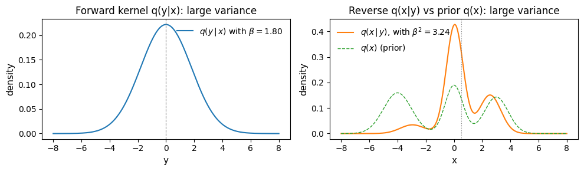
</div>
<figcaption class="quarto-float-caption-bottom quarto-float-caption quarto-float-fig quarto-uncaptioned" id="fig-linear-gaussian-large-variance-caption-0ceaefa1-69ba-4598-a22c-09a6ac19f8ca">
Figure&nbsp;1
</figcaption>
</figure>
</div>
<div id="fig-linear-gaussian-small-variance" class="quarto-float quarto-figure quarto-figure-center anchored">
<figure class="quarto-float quarto-float-fig figure">
<div aria-describedby="fig-linear-gaussian-small-variance-caption-0ceaefa1-69ba-4598-a22c-09a6ac19f8ca">
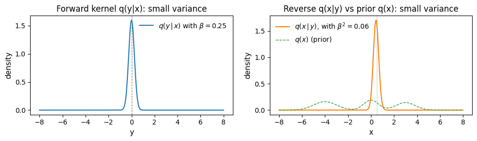
</div>
<figcaption class="quarto-float-caption-bottom quarto-float-caption quarto-float-fig quarto-uncaptioned" id="fig-linear-gaussian-small-variance-caption-0ceaefa1-69ba-4598-a22c-09a6ac19f8ca">
Figure&nbsp;2
</figcaption>
</figure>
</div>
<p>Code Generated above graph: <a href="https://github.com/YYZhang2025/Diffusion-Models/blob/main/notebooks/gaussian.ipynb">GitHub</a></p>
</section>
</section>
<section id="kl-divergence-fisher-divergence" class="level2" data-number="1.2">
<h2 data-number="1.2" class="anchored" data-anchor-id="kl-divergence-fisher-divergence"><span class="header-section-number">1.2</span> KL-Divergence &amp; Fisher Divergence</h2>
<p>The Kullback–Leibler (KL) divergence is a measure of <u>how one probability distribution <span class="math inline">\(Q\)</span> diverges from a reference distribution <span class="math inline">\(P\)</span></u>. It is defined as: <span id="eq-kl-div"><span class="math display">\[
D_{\text{KL}}(Q \| P) = \int Q(z) \log \frac{Q(z)}{P(z)}  dz = \mathbb{E}_{Q}\left[ \log \frac{Q}{P} \right]
\tag{6}\]</span></span></p>
<p>Key properties:</p>
<ul>
<li><span class="math inline">\(D_{\text{KL}} \geq 0,\)</span> with equality if and only if <span class="math inline">\(Q = P\)</span> almost everywhere.</li>
<li>It is <strong>asymmetric</strong>: <span class="math inline">\(D_{\text{KL}}(Q \| P) \neq D_{\text{KL}}(P \| Q)\)</span>.</li>
</ul>
<p>The Fisher divergence provides another way to measure discrepancy between two distributions <span class="math inline">\(Q\)</span> and m<span class="math inline">\(P\)</span>, focusing on their <strong>score functions</strong> (the gradients of log densities, we will introduce score function later.). It is defined as: <span id="eq-fisher-div"><span class="math display">\[
D_{F}(Q \| P) = \frac{1}{2}  \mathbb{E}_{z \sim Q} \Big[ \big| \nabla_z \log Q(z) - \nabla_z \log P(z) \big|^2 \Big]
\tag{7}\]</span></span></p>
<p>For example, for the gaussian distribution <a href="#eq-multivariate-gaussian-distribution" class="quarto-xref">Equation&nbsp;1</a>, the KL-Divergence is:</p>
<p><span id="eq-gaussian-kl"><span class="math display">\[
D_{\text{KL}}(Q \| P) = \frac{1}{2} \Big(
\mathrm{tr}(\Sigma_p^{-1}\Sigma_q)(\mu_p - \mu_q)^{\top}\Sigma_p^{-1}(\mu_p - \mu_q)d + \ln \frac{\det \Sigma_p}{\det \Sigma_q}
\Big)
\tag{8}\]</span></span></p>
</section>
<section id="elbo" class="level2" data-number="1.3">
<h2 data-number="1.3" class="anchored" data-anchor-id="elbo"><span class="header-section-number">1.3</span> ELBO</h2>
<p>In probabilistic modeling and variational inference, we often want to compute the marginal likelihood of observed data <span class="math inline">\(x\)</span>:</p>
<p><span id="eq-log-likelihood"><span class="math display">\[
p(x) = \int p(x, z),dz = \int p(x \mid z),p(z),dz
\tag{9}\]</span></span></p>
<p>where:</p>
<ul>
<li><span class="math inline">\(z\)</span>: is the latent variable.</li>
<li><span class="math inline">\(p(z)\)</span>: is the prior distribution of the latent variable (we often assume Gaussian for the continuous variable).</li>
<li><span class="math inline">\(p(x | z)\)</span>: is the likelihood of the data point <span class="math inline">\(x\)</span>.</li>
</ul>
<p>However, directly computing <span class="math inline">\(p(x)\)</span> is usually intractable.</p>
<div class="callout callout-style-default callout-note callout-titled" title="Why $p(x)$ is intractable?">
<div class="callout-header d-flex align-content-center">
<div class="callout-icon-container">
<i class="callout-icon"></i>
</div>
<div class="callout-title-container flex-fill">
Why <span class="math inline">\(p(x)\)</span> is intractable?
</div>
</div>
<div class="callout-body-container callout-body">
<p>Direct computation of <span class="math inline">\(p(x)\)</span> is generally <strong>intractable</strong>, since the integral is both <strong>high-dimensional</strong> <span class="math inline">\(z \in \mathbb{R}^{d}\)</span> and involves nonlinear functions (e.g., neural networks in generative models).</p>
</div>
</div>
<p>To address this, we will introduce an tractable approximate distribution(also known as <strong>variational distribution</strong>) <span class="math inline">\(Q_{\phi}(z |x)\)</span> to approximate the true posterior <span class="math inline">\(P(z |x)\)</span>. Now, let’s re-write the log-likelihood, and insert <span class="math inline">\(Q_{\phi}(z | x)\)</span> in the equation:</p>
<p><span id="eq-elbo-jensen-s"><span class="math display">\[
\begin{split}
\log_{\theta}P(\mathrm{x})   
&amp;= \log \int P_{\theta}(\mathrm{x} | \mathrm{z}) \, d\mathrm{z} \\
&amp;=  \log \int P_{\theta}(\mathrm{x, z}) \frac{Q_{\phi}(\mathrm{z} | \mathrm{x})}{Q_{\phi}(\mathrm{z} | \mathrm{x})} \, dx   \\
&amp;=  \log \mathbb{E}_{\mathrm{z} \sim Q_{\phi}} \left[ \frac{P_{\theta}(\mathrm{x, z})}{Q_{\phi}(\mathrm{z} | \mathrm{x})} \right] \\
&amp;\geq   \boxed{\mathbb{E}_{\mathrm{z} \sim Q_{\phi}} \left[ \log  \frac{P_{\theta}(\mathrm{x, z})}{Q_{\phi}(\mathrm{z} | \mathrm{x})} \right] } \\
&amp;=  \mathbb{E}_{\mathrm{z} \sim Q_{\phi}} \left[  \log\frac{P_{\theta}(\mathrm{x} | \mathrm{z}) P(\mathrm{z})}{Q_{\phi}(\mathrm{z} | \mathrm{x})}  \right]    \\
&amp; = \mathbb{E}_{\mathrm{z} \sim Q_{\phi}}[\log P_{\theta}(\mathrm{x} | \mathrm{z})] - D_{KL}[Q_{\phi}(\mathrm{z} | \mathrm{x}) \| P(\mathrm{z})]
\end{split}
\tag{10}\]</span></span></p>
<p>The inequality follows from Jensen’s inequality (<span class="math inline">\(\log \mathbb{E}[f] \geq \mathbb{E}[\log f]\)</span>, since <span class="math inline">\(\log\)</span> is concave).</p>
<p>The boxed expectation is the <strong>Evidence Lower Bound (ELBO)</strong>:</p>
<p><span id="eq-elbo-two-terms"><span class="math display">\[
\text{ELBO} = \underbrace{ \mathbb{E}_{\mathrm{z} \sim Q_{\phi}}[\log P_{\theta}(\mathrm{x} | \mathrm{z})]  }_{ \text{Reconstruction term} }- \underbrace{ D_{KL}[Q_{\phi}(\mathrm{z} | \mathrm{x}) \| P(\mathrm{z})] }_{ \text{Regularization term} }
\tag{11}\]</span></span></p>
<ol type="1">
<li>The first term encourages the model to reconstruct the data well.</li>
<li>The second term regularizes the approximate posterior q_{}(z x) to stay close to the prior p(z).</li>
</ol>
<p>Maximizing the ELBO therefore makes <span class="math inline">\(Q_{\phi}(z \mid x)\)</span> approximate the true posterior, while also maximizing the likelihood of the observed data.</p>
<p>Now, let’s derive the ELBO from the another perspective, let’s measure how different <span class="math inline">\(Q_{\phi}(\mathrm{z} | \mathrm{x})\)</span> and <span class="math inline">\(P(\mathrm{z}|\mathrm{x})\)</span> through KL-divergence:</p>
<p><span id="eq-elbo-kl-diver"><span class="math display">\[
\begin{align}
D_{KL}[Q_{\phi}(\mathrm{z} | \mathrm{x}) \| P(\mathrm{z} | \mathrm{x})]   
&amp; = \mathbb{E}_{\mathrm{z} \sim Q_{\phi}(\mathrm{z} | \mathrm{x})} \left[ \log \frac{Q_{\phi}(\mathrm{z} | \mathrm{x})}{P(\mathrm{z} | \mathrm{x})} \right] \\
&amp; = \int Q_{\phi}(\mathrm{z} | \mathrm{x}) \log \frac{Q_{\phi}(\mathrm{z} | \mathrm{x})}{P(\mathrm{z} | \mathrm{x})} \, d\mathrm{z}  \\
&amp; = - \int Q_{\phi}(\mathrm{z} | \mathrm{x}) \log \frac{P(\mathrm{z} | \mathrm{x})}{Q_{\phi}(\mathrm{z} | \mathrm{x})} \, d\mathrm{z}  \\
&amp; = - \int Q_{\phi}(\mathrm{z} | \mathrm{x}) \log \frac{P(\mathrm{z} | \mathrm{x}) P_{\theta}(\mathrm{x})}{Q_{\phi}(\mathrm{z} | \mathrm{x}) P_{\theta}(\mathrm{x})}  \, d\mathrm{z}  \\
&amp; = - \int Q_{\phi}(\mathrm{z} | \mathrm{x}) \log \frac{P_{\theta}(\mathrm{x, z})}{Q_{\phi}(\mathrm{z} | \mathrm{x}) P_{\theta}(\mathrm{x})}  \, d\mathrm{z}  \\
&amp; = - \int Q_{\phi}(\mathrm{z} | \mathrm{x}) \log \frac{P_{\theta}(\mathrm{x, z})}{Q_{\phi}(\mathrm{z} | \mathrm{x})}  \, d\mathrm{z}   + \int Q_{\phi}(\mathrm{z} | \mathrm{x}) \log P_{\theta}(\mathrm{x})  \, d\mathrm{z}  \\
&amp; = - \boxed{\mathbb{E}_{\mathrm{z} \sim Q_{\phi}(\mathrm{z} | \mathrm{x})}\left[\log \frac{P_{\theta}(\mathrm{x, z})}{Q_{\phi}(\mathrm{z} | \mathrm{x})} \right]}  + \log P_{\theta}(\mathrm{x})
\end{align}
\tag{12}\]</span></span></p>
<p>That lead to: <span id="eq-log-elbo-form"><span class="math display">\[
\log P_{\theta}(\mathrm{x}) = \underbrace{ \boxed{\mathbb{E}_{\mathrm{z} \sim Q_{\phi}(\mathrm{z} | \mathrm{x})}\left[\log \frac{P_{\theta}(\mathrm{x, z})}{Q_{\phi}(\mathrm{z} | \mathrm{x})} \right] } }_{ ELBO }+ D_{KL}[Q_{\phi}(\mathrm{z} | \mathrm{x}) \| P(\mathrm{z} | \mathrm{x})]    
\tag{13}\]</span></span></p>
<p>The KN-Divergence is greater than 0, so, the log-likelihood is greater or equal ELBO. When the variational distribution <span class="math inline">\(Q_{\phi}(\mathrm{z} | \mathrm{x})\)</span> is same as the true distribution <span class="math inline">\(P(\mathrm{z} | \mathrm{x})\)</span>, the ELBO is equal to the log-likelihood.</p>
<p>So, in summary, the ELBO is, which is defined as: <span id="eq-elbo-define"><span class="math display">\[
EBLO =  \mathbb{E}_{\mathrm{z} \sim Q_{\phi}(\mathrm{z} | \mathrm{x})}\left[\log \frac{P_{\theta}(\mathrm{x, z})}{Q_{\phi}(\mathrm{z} | \mathrm{x})} \right]  =  \mathbb{E}_{\mathrm{z} \sim Q_{\phi}}[\log P_{\theta}(\mathrm{x} | \mathrm{z})] - D_{KL}[Q_{\phi}(\mathrm{z} | \mathrm{x}) \| P(\mathrm{z})]
\tag{14}\]</span></span></p>
<p>One of the most well-known applications of the ELBO in deep learning is the Variational AutoEncoder <span class="citation" data-cites="AutoEncodingVariationalBayes2022kingma">(<a href="#ref-AutoEncodingVariationalBayes2022kingma" role="doc-biblioref">Kingma and Welling 2022</a>)</span>. <strong>T</strong>he VAE is a generative model that combines probabilistic latent variable modeling with neural networks. It introdce an <strong>encoder network</strong> to parameterize the variational distribution <span class="math inline">\(q_{\phi}(z \mid x)\)</span> and a <strong>decoder network</strong> to model the likelihood <span class="math inline">\(p_{\theta}(x \mid z)\)</span>. Training the VAE corresponds to maximizing the ELBO, which balances two objectives: (1) accurately reconstructing the input data from latent codes, and (2) regularizing the latent distribution to remain close to a simple prior (typically Gaussian). This makes VAEs powerful tools for both <strong>representation learning</strong> and <strong>generative modeling</strong>. For those who are interested in the implementation of the VAE, and deep dive in to VAE, please to check:</p>
<ul>
<li><a href="https://github.com/YYZhang2025/100-AI-Code">VAE Code</a></li>
<li><a href="https://yuyang.info/100-AI-Papers/posts/07-vae/post.html">VAE Blog</a></li>
</ul>
</section>
<section id="score-function-langevin-dynamics" class="level2" data-number="1.4">
<h2 data-number="1.4" class="anchored" data-anchor-id="score-function-langevin-dynamics"><span class="header-section-number">1.4</span> Score function &amp; Langevin Dynamics</h2>
<p>The score function of a probability distribution <span class="math inline">\(p(x)\)</span> is defined as the<u> gradient of its log-density</u> with respect to the variable <span class="math inline">\(x\)</span>: <span id="eq-score-function"><span class="math display">\[
s(x) = \nabla_x \log p(x)
\tag{15}\]</span></span></p>
<p>the score function points toward regions of higher probability mass. In high-dimensional spaces, where the explicit density <span class="math inline">\(p(x)\)</span> may be intractable to compute, the score function provides a powerful alternative representation: instead of knowing the density itself, we only need to know the direction in which probability increases.</p>
<p><strong>Langevin dynamics</strong> originates from statistical physics and describes the motion of particles subject to both deterministic forces and random noise. In the context of sampling from a distribution p(x), Langevin dynamics provides a stochastic iterative update rule: <span id="eq-langevin-dynamics"><span class="math display">\[
x_{t+1} = x_t + \frac{\eta}{2} \nabla_x \log p(x_t) + \sqrt{\eta}\varepsilon_t
\quad \varepsilon_t \sim \mathcal{N}(0, I)
\tag{16}\]</span></span></p>
<p>Here:</p>
<ul>
<li><span class="math inline">\(\eta &gt; 0\)</span> is the step size</li>
<li>the gradient term drives samples toward high-probability regions,</li>
<li>the noise term ensures proper exploration of the space.</li>
</ul>
<p>This stochastic process converges to the target distribution <span class="math inline">\(p(x)\)</span> under suitable conditions, making it a foundational method for <a href="https://en.wikipedia.org/wiki/Markov_chain_Monte_Carlo">Markov Chain Monte Carlo (MCMC) sampling</a>.</p>
<p>For example, the score of the Gaussian Distribution is: <span id="eq-score-for-gaussian"><span class="math display">\[
s(x) = \nabla_x \log p(x) = -\Sigma^{-1}(x - \mu)
\tag{17}\]</span></span></p>
<p>So, we can run the langevin dynamics as following: <span id="eq-ld-for-gaussian"><span class="math display">\[
x_{t+1} = x_t + \frac{\eta_t}{2}\left(-\frac{x_t-\mu}{\sigma^2}\right) + \sqrt{\eta_t}\,\varepsilon_t
\tag{18}\]</span></span></p>
<div class="sourceCode" id="cb1" data-code-line-numbers=""><pre class="sourceCode numberSource python number-lines code-with-copy"><code class="sourceCode python"><span id="cb1-1"><a href="#cb1-1"></a><span class="kw">def</span> langevin_dynamics_update(x, step_size, score):</span>
<span id="cb1-2"><a href="#cb1-2"></a>    noise <span class="op">=</span> np.random.randn()</span>
<span id="cb1-3"><a href="#cb1-3"></a>    x <span class="op">=</span> x <span class="op">+</span> (step_size <span class="op">/</span> <span class="fl">2.0</span>) <span class="op">*</span> score <span class="op">+</span> np.sqrt(step_size) <span class="op">*</span> noise</span>
<span id="cb1-4"><a href="#cb1-4"></a>    <span class="cf">return</span> x</span></code><button title="Copy to Clipboard" class="code-copy-button"><i class="bi"></i></button></pre></div>
<p>Below are two plot showing the Langevin Dynamics on 1-d Gaussian Distribution, 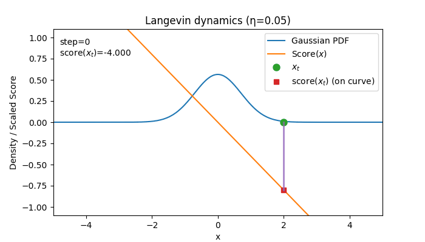</p>
<div id="fig-ld-for-gaussian-vary" class="quarto-float quarto-figure quarto-figure-center anchored">
<figure class="quarto-float quarto-float-fig figure">
<div aria-describedby="fig-ld-for-gaussian-vary-caption-0ceaefa1-69ba-4598-a22c-09a6ac19f8ca">
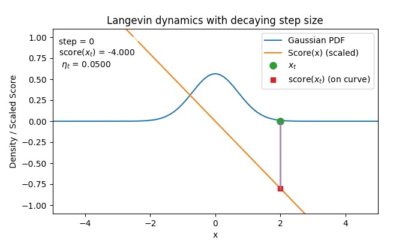
</div>
<figcaption class="quarto-float-caption-bottom quarto-float-caption quarto-float-fig" id="fig-ld-for-gaussian-vary-caption-0ceaefa1-69ba-4598-a22c-09a6ac19f8ca">
Figure&nbsp;3: langevin_step_vary
</figcaption>
</figure>
</div>
<div class="callout callout-style-default callout-note callout-titled" title="Langevin Dynamics vs. Gradient Descient">
<div class="callout-header d-flex align-content-center">
<div class="callout-icon-container">
<i class="callout-icon"></i>
</div>
<div class="callout-title-container flex-fill">
Langevin Dynamics vs.&nbsp;Gradient Descient
</div>
</div>
<div class="callout-body-container callout-body">
<p>The Langevin Dynamics is very similary as the algorithm we used to update the parameters in the neural network, which if defined as: <span class="math display">\[
x_{t+1} = x_t - \eta \,\nabla f(x_t)
\]</span> where <span class="math inline">\(\eta\)</span> is the learning rate. However, there are several different: - The Graident Descient is Determinsitc while Langevin Dynamics is storchasic becuase of <span class="math inline">\(\sqrt{ \eta } \varepsilon_t\)</span> - Gradient Descent minimizes an explicit function f(x) while Langevin Dynamics simulates a Markov chain whose stationary distribution is p(x) with constant <span class="math inline">\(\eta\)</span>, it generates samples from that distribution.</p>
</div>
</div>
</section>
</section>
<section id="ddpm" class="level1" data-number="2">
<h1 data-number="2"><span class="header-section-number">2</span> DDPM</h1>
<p>In this section, we will introduce what is the &nbsp;<strong>Denoising Diffusion Probabilistic Model (DDPM)</strong> <span class="citation" data-cites="DenoisingDiffusionProbabilistic2020ho">(<a href="#ref-DenoisingDiffusionProbabilistic2020ho" role="doc-biblioref">Ho, Jain, and Abbeel 2020</a>)</span>. DDPM in one sentence is that: a generative model that creates realistic data by <u>learning to reverse a step-by-step noising process, gradually denoising random noise into meaningful samples</u>. The central idea of DDPM is take each training image and to corrupt it using a multi-step noise process to transform it into a sample from a Gaussian distribution. Than, a neural network, is trained to invert this process. Once the network is trained, it can than generate new images starting with samples from Gaussian.</p>
<p>We will derive three predictor:</p>
<ul>
<li>Image predictor <span class="math inline">\(\hat{\mathrm{x}}_{\theta}\)</span></li>
<li>Mean Predictor <span class="math inline">\(\hat{\mu}_{\theta}\)</span></li>
<li>Noise Predictor <span class="math inline">\(\hat{\epsilon}_{\theta}\)</span></li>
</ul>
<p>It is ok if you don’t understand right now.</p>
<p></p>
<section id="forward-and-backward-diffusion-process" class="level2" data-number="2.1">
<h2 data-number="2.1" class="anchored" data-anchor-id="forward-and-backward-diffusion-process"><span class="header-section-number">2.1</span> Forward and Backward Diffusion Process</h2>
<p>For the diffusion process, we gradually add standard normal distribution, until it become the pure gaussian, mathematically, it can be express as:</p>
<p><span class="math display">\[
p(\mathrm{x}_{t} | \mathrm{x}_{t- 1}) = \mathcal{N}(\mathrm{x}_{t}; \sqrt{ 1 - \beta_{t} }\mathrm{x}_{t -1}, \beta_{t} \mathbf{I}_{d})
\]</span></p>
<p>where <span class="math inline">\(\{ \beta_{t} \in (0, 1) \}_{t = 1}^{T}\)</span> and <span class="math inline">\(\beta_{1} \leq \beta_{2} \leq \dots \leq \beta_{T}\)</span>. The <span class="math inline">\(\mathrm{x}_{t}\)</span> can be expressed as: <span class="math display">\[
\mathrm{x}_{t} =  \sqrt{ 1 - \beta_{t} }\mathrm{x}_{t -1} +\sqrt{ \beta_{t} } \epsilon_{t}
\]</span></p>
<p>There are many different choice of <span class="math inline">\(\beta\)</span>:</p>
<ul>
<li>Learned</li>
<li>Constant</li>
<li>Linearly or quadratically increased</li>
<li>Follows a cosine function</li>
</ul>
<p>One thing to notice is that <span class="math inline">\(\beta_{t} \ll 1\)</span> to make sure that <span class="math inline">\(p_{\theta}(\mathrm{x}_{t-1} | \mathrm{x}_{t})\)</span> can be approximated to the Gaussian Distribution. Look at the expression of the <span class="math inline">\(\mathrm{x}_{t}\)</span>, we can see that it depends on the <span class="math inline">\(\mathrm{x}_{t-1}\)</span>, while <span class="math inline">\(\mathrm{x}_{t -1 }\)</span> depends on the <span class="math inline">\(\mathrm{x}_{t - 2}\)</span>, and so on, so, the <span class="math inline">\(\mathrm{x}_{t}\)</span> can also be expressed as:</p>
<p><span class="math display">\[
\mathrm{x}_{t} = \sqrt{ \alpha_{t} }\mathrm{x}_{0}+ \sqrt{ 1-\alpha_{t} } \epsilon_{t} \quad \text{where}\ \alpha_{t} = \prod_{\tau=1}^{t}(1 - \beta_{\tau})
\]</span></p>
<p>This is called the <span style="color:rgb(0, 176, 80)">forward process</span>,</p>
<p>And the whole forward process format a <span style="color:rgb(0, 176, 80)">Markov Chain</span>:</p>
<p><span class="math display">\[
p(\mathrm{x}_{0}, \mathrm{x}_{1: T}) = p(\mathrm{x}_{0}) \prod_{t = 1}^{T}p(\mathrm{x}_{t} | \mathrm{x}_{t  -1 })
\]</span></p>
<p>Let’s quick summary the forward process, and get familiar with following equations:</p>
<p><span class="math display">\[
\begin{split}
\mathrm{x}_{t} &amp; =  \sqrt{ 1 - \beta_{t} }\mathrm{x}_{t -1} +\sqrt{ \beta_{t} } \epsilon_{t} \\
\mathrm{x}_{t} &amp; = \sqrt{ \alpha_{t} }\mathrm{x}_{0}+ \sqrt{ 1-\alpha_{t} } \epsilon_{t}  \\
\mathrm{x}_{0} &amp; = \frac{\mathrm{x}_{t} - \sqrt{ 1-\alpha_{t} } \epsilon_{t}}{\sqrt{ \alpha_{t} }} \\
\epsilon_t &amp; = \frac{\mathrm{x}_t - \sqrt{\alpha_t} \mathrm{x}_0 }{\sqrt{1 - \alpha_t}}
\end{split}
\]</span></p>
<p>From the last three equation, we can conclude that, <u>as long as we know two of three <span class="math inline">\(\mathrm{x}_{0}, \mathrm{x}_{t}, \mathrm{\epsilon}_{t}\)</span>, we can get other three, this is very useful when we are training the DDPM. </u></p>
<p>Backward Process, backward process is from <span class="math inline">\(\mathrm{x}_{t}\)</span> to <span class="math inline">\(\mathrm{x}_{t -1}\)</span>, it can be expression as: <span class="math display">\[
p(\mathrm{x}_{t - 1} |  \mathrm{ x}_{t}) = \int p(\mathrm{x}_{t - 1} | \mathrm{x}_{t}, \mathrm{x}_{0})p(\mathrm{x}_{0} | \mathrm{x}_{t}) d\mathrm{x}_{0}
\]</span></p>
<p>This is intractable if we marginal over <span class="math inline">\(\mathrm{x}_{0}\)</span>. However, if we also conditioned on the <span class="math inline">\(\mathrm{x}_{0}\)</span>, we will get: <span class="math display">\[
p(\mathrm{x}_{t - 1} | \mathrm{x}_{t}, \mathrm{x}_{0}) = \frac{q(\mathrm{x}_{t} | \mathrm{x}_{t - 1}, \mathrm{x}_{0}) q(\mathrm{x}_{t - 1} | \mathrm{x}_{0})}{q(\mathrm{x}_{t} | \mathrm{x}_{0})}
\]</span></p>
<p>We now that the Markov property of the forward process, we have: <span class="math display">\[
q(\mathrm{x}_{t} | \mathrm{x}_{t - 1}, \mathrm{x}_{0})  = q(\mathrm{x}_{t} | \mathrm{x}_{t - 1})
\]</span> which we know, the exact equation is, and we also know what <span class="math inline">\(q(\mathrm{x}_{t} | \mathrm{x}_{0})\)</span>, so, we know extact what the <span class="math inline">\(p(\mathrm{x}_{t - 1} | \mathrm{x}_{t}, \mathrm{x}_{0})\)</span> is: <span class="math display">\[
\begin{split}
p(\mathrm{x}_{t - 1} | \mathrm{x}_{t}, \mathrm{x}_{0})  &amp; = \mathcal{N}(\mathrm{x}_{t -1} | \mu_{t}(\mathrm{x}_{0}, \mathrm{x}_{t}), \sigma_{t}^{2}\mathbf{I}_{d}) \\ \\
\quad \text{where}\   \mu_{t}(\mathrm{x}_{0}, \mathrm{x}_{t}) &amp; = \frac{(1 - \alpha_{t - 1})\sqrt{ 1- \beta _{t}}\mathrm{x}_{t} + \sqrt{ \alpha_{t - 1} }\beta_{t}\mathrm{x}_{0}}{1 -\alpha_{t}} \\
\sigma_{t}^{2} &amp; = \frac{\beta_{t}( 1- \alpha_{t - 1})}{1 -\alpha_{t}}
\end{split}
\]</span></p>
<p>However, when we are generating the example, we don’t know what <span class="math inline">\(\mathrm{x}_{0}\)</span> is. That why we need train a neural network to approximate it.</p>
<p>Next, derive the loss function we needed to train the neural network.</p>
</section>
<section id="loss-function" class="level2" data-number="2.2">
<h2 data-number="2.2" class="anchored" data-anchor-id="loss-function"><span class="header-section-number">2.2</span> Loss Function</h2>
<p>Let’s first derive the loss function of the DDPM. DDPM can be view as the hierarchical VAE. So, we can derive the loss function using the ELBO <a href="#eq-elbo-define" class="quarto-xref">Equation&nbsp;14</a>. Recall, the log-likelihood with ELBO is defined as following:</p>
<p><span class="math display">\[
\begin{align}
\log P_{\theta}(\mathrm{x}) &amp; =  ELBO + D_{KL}[Q_{\phi}(\mathrm{z} | \mathrm{x}) \| P(\mathrm{z} | \mathrm{x})]     \\
&amp; \geq   \mathbb{E}_{\mathrm{z} \sim Q_{\phi}(\mathrm{z} | \mathrm{x})}\left[\log \frac{P_{\theta}(\mathrm{x, z})}{Q_{\phi}(\mathrm{z} | \mathrm{x})} \right]    \\
&amp; = \mathbb{E}_{\mathrm{x}_{1:T} \sim Q_{\phi}(\mathrm{x}_{1:T} | \mathrm{x}_{0})}\left[\log \frac{P_{\theta}(\mathrm{x}_{0}, \mathrm{x}_{1:T})}{Q_{\phi}(\mathrm{x}_{1:T} | \mathrm{x}_{0})} \right]  
\end{align}
\]</span> where <span class="math inline">\(\mathrm{x}_{1:T}\)</span> is the latent variable.</p>
<p>One thing good about DDPM is that, we know what is the posteriror distribution <span class="math inline">\(Q_{\phi}(\mathrm{x}_{1:T} | \mathrm{x}_{0})\)</span> exactly: <span class="math display">\[
Q_{\phi}(\mathrm{x}_{1:T} | \mathrm{x}_{0}) = \prod_{t=1}^{T}P(\mathrm{x}_{t} | \mathrm{x}_{t - 1})
\]</span></p>
<p>So, the ELBO become: <span class="math display">\[
\begin{align}
EBLO   
&amp; = \mathbb{E}_{\mathrm{x}_{1:T} \sim Q_{\phi}(\mathrm{x}_{1:T} | \mathrm{x}_{0})}\left[\log \frac{P_{\theta}(\mathrm{x}_{0}, \mathrm{x}_{1:T})}{Q_{\phi}(\mathrm{x}_{1:T} | \mathrm{x}_{0})} \right]   \\
&amp; =  \mathbb{E}_{\mathrm{x}_{1:T} \sim Q(\mathrm{x}_{1:T} | \mathrm{x}_{0})} \left[ \log \frac{P_{\theta}(\mathrm{x}_{0} | \mathrm{x_{1}}) \prod_{t = 2}^{T}P_{\theta}(\mathrm{x_{t - 1} | \mathrm{x}_{t}})P(\mathrm{x}_{T})}
{Q(\mathrm{x}_{1} | \mathrm{x}_{0})\prod_{t=2}^{T}Q(\mathrm{x}_{t} | \mathrm{x}_{t - 1})}  \right] \\
&amp; = \mathbb{E}_{ Q(\mathrm{x}_{T} | \mathrm{x}_{0})} [\log  P(\mathrm{x}_{T})] +  \mathbb{E}_{ Q(\mathrm{x}_{1:T} | \mathrm{x}_{0})} \left[ \log \frac{\prod_{t=2}^{T}P_{\theta}(\mathrm{x_{t - 1} | \mathrm{x}_{t}})}{\prod_{t=2}^{T}Q(\mathrm{x}_{t} | \mathrm{x}_{t - 1})} \right] + \mathbb{E}_{ Q(\mathrm{x}_{1} | \mathrm{x}_{0})} \left[ \log \frac{P_{\theta}(\mathrm{x}_{0} | \mathrm{x}_{1})}{Q(\mathrm{x}_{1} | \mathrm{x}_{0})}  \right] \\
&amp; = \mathbb{E}_{ Q(\mathrm{x}_{T} | \mathrm{x}_{0})} [\log  P(\mathrm{x}_{T})]  
+ \log  \sum_{t=2}^{T}\mathbb{E}_{ Q(\mathrm{x}_{t-1}, \mathrm{x_{t}} | \mathrm{x}_{0})}\left[ \log \frac{P_{\theta}(\mathrm{x}_{t-1} | \mathrm{x}_{t})}{Q(\mathrm{x}_{t} | \mathrm{x}_{t-1})}  \right]
+ \mathbb{E}_{ Q(\mathrm{x}_{1} | \mathrm{x}_{0})} \left[ \log \frac{P_{\theta}(\mathrm{x}_{0} | \mathrm{x}_{1})}{Q(\mathrm{x}_{1} | \mathrm{x}_{0})}  \right]
\end{align}
\]</span></p>
<p>As we can see, to calculate the second term, we need to sample from two random distribution, to get <span class="math inline">\(\mathrm{x_{t}}, \mathrm{x_{t-1}}\)</span>. This will create very noisy estimate with high variance. So, we need to re-write the ELBO, to make it better low variance, using the Bayesian Rule, we get:</p>
<p><span class="math display">\[
\begin{align}
ELBO &amp;=   \mathbb{E}_{\mathrm{x}_{1:T} \sim Q(\mathrm{x}_{1:T} | \mathrm{x}_{0})} \left[ \log \left( P(\mathrm{x}_{T})\frac{\prod_{t = 2}^{T}P_{\theta}(\mathrm{x_{t - 1} | \mathrm{x}_{t}})}
{\prod_{t=2}^{T}Q(\mathrm{x}_{t} | \mathrm{x}_{t - 1})} \frac{P_{\theta}(\mathrm{x}_{0} | \mathrm{x_{1}})}{Q(\mathrm{x}_{1} | \mathrm{x}_{0})} \right)  \right]    \\
&amp;=   \mathbb{E}_{\mathrm{x}_{1:T} \sim Q(\mathrm{x}_{1:T} | \mathrm{x}_{0})} \left[ \log \left( P(\mathrm{x}_{T})\frac{\prod_{t = 2}^{T}P_{\theta}(\mathrm{x_{t - 1} | \mathrm{x}_{t}})}
{\prod_{t=2}^{T}Q(\textcolor{green}{\mathrm{x}_{t} | \mathrm{x}_{t - 1}, \mathrm{x}_{0}})} \frac{P_{\theta}(\mathrm{x}_{0} | \mathrm{x_{1}})}{Q(\mathrm{x}_{1} | \mathrm{x}_{0})} \right)  \right]  \\
&amp;=   \mathbb{E}_{\mathrm{x}_{1:T} \sim Q(\mathrm{x}_{1:T} | \mathrm{x}_{0})} \left[ \log \left( P(\mathrm{x}_{T})\frac{\prod_{t = 2}^{T}P_{\theta}(\mathrm{x_{t - 1} | \mathrm{x}_{t}})}
{\prod_{t=2}^{T}Q(\textcolor{green}{\mathrm{x}_{t-1} | \mathrm{x}_{t}, \mathrm{x}_{0}})} \frac{Q(\mathrm{x}_{t-1} | \mathrm{x}_{0})}{Q(\mathrm{x}_{t}|\mathrm{x}_{0})}\frac{P_{\theta}(\mathrm{x}_{0} | \mathrm{x_{1}})}{Q(\mathrm{x}_{1} | \mathrm{x}_{0})} \right)  \right]  \\
&amp;=   \mathbb{E}_{\mathrm{x}_{1:T} \sim Q(\mathrm{x}_{1:T} | \mathrm{x}_{0})} \left[ \log \left( P(\mathrm{x}_{T})\frac{\prod_{t = 2}^{T}P_{\theta}(\mathrm{x_{t - 1} | \mathrm{x}_{t}})}
{\prod_{t=2}^{T}Q(\textcolor{green}{\mathrm{x}_{t-1} | \mathrm{x}_{t}, \mathrm{x}_{0}})} \frac{Q(\mathrm{x}_{1} | \mathrm{x}_{0})}{Q(\mathrm{x}_{T}|\mathrm{x}_{0})}\frac{P_{\theta}(\mathrm{x}_{0} | \mathrm{x_{1}})}{Q(\mathrm{x}_{1} | \mathrm{x}_{0})} \right)  \right]  \\
&amp;=  \mathbb{E}_{\mathrm{x}_{1:T} \sim Q(\mathrm{x}_{1:T} | \mathrm{x}_{0})} \left[ \log \left( \frac{P(\mathrm{x}_{T})}{Q(\mathrm{x}_{T}|\mathrm{x}_{0})} \frac{\prod_{t = 2}^{T}P_{\theta}(\mathrm{x_{t - 1} | \mathrm{x}_{t}})}
{\prod_{t=2}^{T}Q(\textcolor{green}{\mathrm{x}_{t-1} | \mathrm{x}_{t}, \mathrm{x}_{0}})}P_{\theta}(\mathrm{x}_{0} | \mathrm{x_{1}}) \right)  \right]   \\
&amp;=  \mathbb{E}_{\mathrm{x}_{1:T} \sim Q(\mathrm{x}_{1:T} | \mathrm{x}_{0})} \left[ \log \left( \frac{P(\mathrm{x}_{T})}{Q(\mathrm{x}_{T}|\mathrm{x}_{0})} \frac{\prod_{t = 2}^{T}P_{\theta}(\mathrm{x_{t - 1} | \mathrm{x}_{t}})}
{\prod_{t=2}^{T}Q(\textcolor{green}{\mathrm{x}_{t-1} | \mathrm{x}_{t}, \mathrm{x}_{0}})}P_{\theta}(\mathrm{x}_{0} | \mathrm{x_{1}}) \right)  \right]   \\
&amp; = \mathbb{E}_{\mathrm{x}_{T} \sim Q(\mathrm{x}_{T} | \mathrm{x}_{0})} \left[\log \frac{P(\mathrm{x}_{T})}{Q(\mathrm{x}_{T}|\mathrm{x}_{0})} \right] + \sum_{t=2}^{T} \mathbb{E}_{\mathrm{x}_{t} \sim Q(\mathrm{x}_{t} |\mathrm{x}_{0} )} \left[\log \frac{P_{\theta}(\mathrm{x_{t - 1} | \mathrm{x}_{t}})}
{Q(\textcolor{green}{\mathrm{x}_{t-1} | \mathrm{x}_{t}, \mathrm{x}_{0}})} \right]
+ \mathbb{E}_{\mathrm{x}_{1} \sim Q(\mathrm{x}_{1} | \mathrm{x}_{0})}[P_{\theta}(\mathrm{x}_{0} | \mathrm{x_{1}}) ]  \\
&amp; = -D_{KL}[Q(\mathrm{x}_{T} | \mathrm{x}_{0}) \| P(\mathrm{x}_{T})]  \\ &amp;
\quad - \sum_{t=2}^{T}\mathbb{E}_{\mathrm{x}_{t} \sim Q(\mathrm{x}_{t} |\mathrm{x}_{0} )} [D_{KL}[Q(\mathrm{x}_{t-1} |\mathrm{x}_{t} \mathrm{x}_{0}) \| P_{\theta}(\mathrm{x}_{t-1} | \mathrm{x}_{t})]  ]\\&amp;
\quad +  \mathbb{E}_{\mathrm{x}_{1} \sim Q(\mathrm{x}_{1} | \mathrm{x}_{0})}[P_{\theta}(\mathrm{x}_{0} | \mathrm{x_{1}}) ]
\end{align}
\]</span></p>
<p>The first term is the <strong>prior matching term</strong>, which is the constant, no need to optimize. The third term is the <strong>reconstruction term</strong>, which is the negilibale, because the variance schedule make it almost constant and its learning signal is weak compared to the denoising terms. Now, let’s check the most complex and horriable term, the second term is the <strong>consistent term</strong>, which the KL Divergence <a href="#eq-kl-div" class="quarto-xref">Equation&nbsp;6</a> between two <strong>gaussian distribution</strong>, which has close form: <span class="math display">\[
\mathbb{E}_{\mathrm{x}_{t} \sim Q(\mathrm{x}_{t} |\mathrm{x}_{0} )} [D_{KL}[Q(\mathrm{x}_{t-1} |\mathrm{x}_{t} \mathrm{x}_{0}) \| P_{\theta}(\mathrm{x}_{t-1} | \mathrm{x}_{t})]  ] = \mathbb{E}_{\mathrm{x}_{t} \sim Q(\mathrm{x}_{t} | \mathrm{x}_{0})} \left [\frac{1}{2\tilde{\sigma}_{t}^{2}}\| \mu_{\theta}(\mathrm{x}_{t}, t)  - \tilde{\mu}(\mathrm{x}_{t} | \mathrm{x}_{0})\|^{2} \right]
\]</span></p>
<p>Since we know that the <span class="math inline">\(\tilde{\mu}(\mathrm{x}_{t} | \mathrm{x}_{0})\)</span> exact it, we can optimize this by:</p>
<ol type="1">
<li>Sample <span class="math inline">\(\mathrm{x}_{0}\)</span>, <span class="math inline">\(t\)</span></li>
<li>Sample <span class="math inline">\(\mathrm{x}_{t}\)</span> from <span class="math inline">\(\mathcal{N}(\tilde{\mu}(\mathrm{x}_{t} | \mathrm{x}_{0}), \beta_{t} \varepsilon_{t})\)</span></li>
<li>Pass the <span class="math inline">\(\mathrm{x}_{t}\)</span> and <span class="math inline">\(t\)</span> to the neural network <span class="math inline">\(\mu_{\theta}\)</span></li>
<li>Calculate the mean square loss and update the parameters <span class="math inline">\(\theta\)</span></li>
<li>Repeat</li>
</ol>
<p>Let’s see how can we get <span class="math inline">\(\mathrm{x}_{0}\)</span> deriectly from the neural network, let rewrite the ELBO:</p>
<p><span class="math display">\[
\begin{align}
\mathbb{E}_{\mathrm{x}_{t} \sim Q(\mathrm{x}_{t} |\mathrm{x}_{0} )} [D_{KL}[Q(\mathrm{x}_{t-1} |\mathrm{x}_{t} \mathrm{x}_{0}) \| P_{\theta}(\mathrm{x}_{t-1} | \mathrm{x}_{t})]  ] &amp;= \mathbb{E}_{\mathrm{x}_{t} \sim Q(\mathrm{x}_{t} | \mathrm{x}_{0})} \left [\frac{1}{2\tilde{\sigma}_{t}^{2}}\| \mu_{\theta}(\mathrm{x}_{t}, t)  - \tilde{\mu}(\mathrm{x}_{t}, \mathrm{x}_{0})\|^{2} \right] \\
&amp; = \frac{1}{2 \tilde{\sigma}_t^2}&nbsp;\cdot&nbsp;
\frac{\bar{\alpha}_{t-1} \beta_t^2}{(1-\bar{\alpha}_t)^2}&nbsp;
\mathbb{E}_{\mathrm{x}_{t}\sim Q(\mathrm{x}_t|\mathrm{x}_0)}&nbsp;
\left[ \| \hat{x}_\theta(x_t, t) - x_0 \|^2 \right] \\
&amp; =\omega_t
\mathbb{E}_{\mathrm{x}_{t}\sim Q(\mathrm{x}_t|\mathrm{x}_0)}&nbsp;
\left[ \| \hat{\mathrm{x}}_\theta(\mathrm{x}_t, t) - \mathrm{x}_0 \|^2 \right]
\end{align}
\]</span></p>
<p>As we can see, the <span class="math inline">\(\mathrm{x}_{\theta}\)</span> can be write as the <span class="math inline">\(\mu_{\theta}\)</span> to some constant.</p>
<p>Finally, let’s get our noise predictor <span class="math inline">\(\varepsilon_t\)</span>-predictor: <span class="math display">\[
\begin{align}
\mathbb{E}_{\mathrm{x}_{t} \sim Q(\mathrm{x}_{t} |\mathrm{x}_{0} )} [D_{KL}[Q(\mathrm{x}_{t-1} |\mathrm{x}_{t} \mathrm{x}_{0}) \| P_{\theta}(\mathrm{x}_{t-1} | \mathrm{x}_{t})]  ] &amp;= \mathbb{E}_{\mathrm{x}_{t} \sim Q(\mathrm{x}_{t} | \mathrm{x}_{0})} \left [\frac{1}{2\tilde{\sigma}_{t}^{2}}\| \mu_{\theta}(\mathrm{x}_{t}, t)  - \tilde{\mu}(\mathrm{x}_{t}, \mathrm{x}_{0})\|^{2} \right] \\
&amp; = \frac{1}{2 \tilde{\sigma}_t^2}
\cdot
\frac{(1-\bar{\alpha}_t)^2}{\bar{\alpha}_t (1-\bar{\alpha}_t)}
\mathbb{E}_{\mathrm{x}_{t} \sim Q(\mathrm{x}_t|\mathrm{x}_0)}
\left[ \| \hat{\varepsilon}_\theta(x_t, t) - \varepsilon_t \|^2 \right]
\\
&amp; =\omega_{t}'
\mathbb{E}_{\mathrm{x}_{t}\sim Q(\mathrm{x}_t|\mathrm{x}_0)}&nbsp;
\left[ \| \hat{\varepsilon}_\theta(x_t, t) - \varepsilon_t \|^2 \right]
\end{align}
\]</span></p>
<p>Summary, from the DDPM, we have derive 3 different predictor:</p>
<ul>
<li>Mean Predictor</li>
<li><span class="math inline">\(x_{0}\)</span> Predictor</li>
<li>Noise Predictor 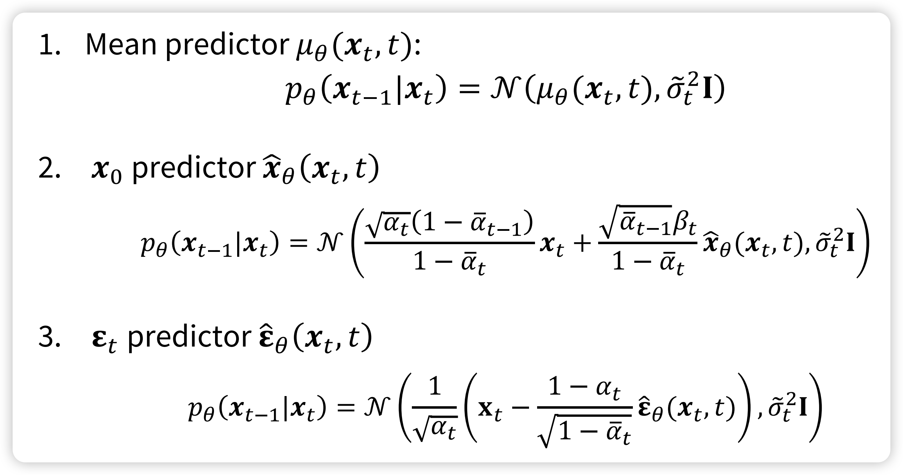</li>
</ul>
<p></p>
<p>In practice, we can simply drop the weight term in training: and use noise predictor</p>
<p>In this blog, we will first introduce what is the diffusion models, than we will introduce how to implement the DDPM from scratch using PyTorch. After that, we will explore the flow matching and score matching model through the ODE/SDE. By the end of the blog, I believe you will gain a comprehensive understanding of the diffusion model, and SOTA generative models.</p>
</section>
<section id="sampling-from-ddpm" class="level2" data-number="2.3">
<h2 data-number="2.3" class="anchored" data-anchor-id="sampling-from-ddpm"><span class="header-section-number">2.3</span> Sampling from DDPM</h2>
<p>Diffusion Model</p>
<p>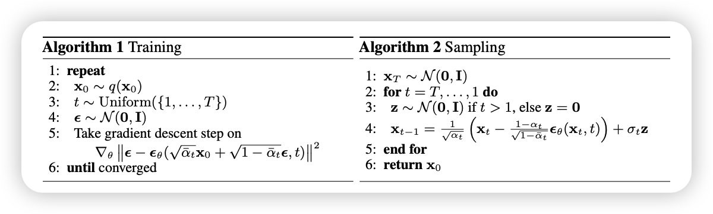</p>
<p>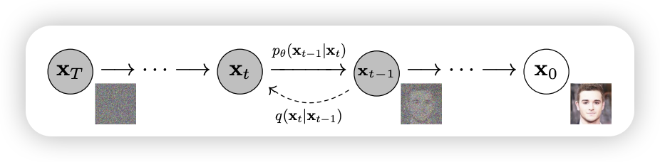</p>
<p>Forward Diffusion Process: <span class="math display">\[
q(\mathrm{x}_{t} | \mathrm{x}_{t - 1}) =\mathcal{N}(
\mathrm{x}_{t};
\sqrt{ 1 - \beta_{t} }\mathrm{x}_{t}, \beta_{t}\mathbf{I}
)
\]</span></p>
<p><span class="math display">\[
\mathrm{x}_{t} =  \sqrt{ 1 - \beta_{t} }\mathrm{x}_{t} + \beta_{t}\epsilon_{t}, \quad \text{where} \ \epsilon_{t} \sim \mathcal{N}(0, \mathbf{I}_{})
\]</span></p>
<p><span class="math display">\[
\mathrm{x}_{t} = \sqrt{ \bar{\alpha}_{t} }\mathrm{x_{0}} +  \sqrt{ 1 - \bar{\alpha}_{t} }\epsilon
\]</span></p>
<p>&nbsp;Langevin dynamics: $$ <em>t = </em>{t-1} + <em>{} p(</em>{t-1}) + ,_t, _t (0, )</p>
<p>$$</p>
<p>Backward Diffusion Process: $$ <span class="math display">\[\begin{align}
&amp; p_{\theta}(\mathbf{x}_{0:T}) = p(\mathbf{x}_T) \prod_{t=1}^T p_{\theta}(\mathbf{x}_{t-1} \mid \mathbf{x}_t)  \\

&amp;  p_{\theta}(\mathbf{x}_{t-1} \mid \mathbf{x}_t) = \mathcal{N}\!\left(\mathbf{x}_{t-1}; \mu_{\theta}(\mathbf{x}_t, t), \Sigma_{\theta}(\mathbf{x}_t, t)\right)

\end{align}\]</span> $$</p>
<p>The above content is intractable, one thing to notice that is is tractable when we conditioned on the <span class="math inline">\(\mathrm{x}_{0}\)</span> <span class="math display">\[
q(\mathbf{x}_{t-1} \mid \mathbf{x}_t, \mathbf{x}_0)
= \mathcal{N}\!\left(\mathbf{x}_{t-1};
\textcolor{blue}{\tilde{\mu}(\mathbf{x}_t, \mathbf{x}_0)}, \,
\textcolor{red}{\tilde{\beta}_t \mathbf{I}}\right)
\]</span> where : <span class="math display">\[
\begin{align}
\tilde{\mu}_t
&amp; = \frac{\sqrt{\alpha_t}(1 - \bar{\alpha}_{t-1})}{1 - \bar{\alpha}_t}\mathbf{x}_t
+ \frac{\sqrt{\bar{\alpha}_{t-1}}\beta_t}{1 - \bar{\alpha}_t}
   \frac{1}{\sqrt{\alpha_t}} \left(\mathbf{x}_t - \sqrt{1 - \bar{\alpha}_t}\,\epsilon_t\right) \\
&amp; = \textcolor{cyan}{\frac{1}{\sqrt{\alpha_t}}
   \left(\mathbf{x}_t - \frac{1 - \alpha_t}{\sqrt{1 - \bar{\alpha}_t}} \,\epsilon_t\right)}
\end{align}
\]</span></p>
<p>So, the loss function become: $$</p>
<p><span class="math display">\[\begin{align}
\mathcal{L}_t^{\text{simple}}
&amp; = \mathbb{E}_{t \sim [1,T], \mathbf{x}_0, \epsilon_t}
  \left[ \left\| \epsilon_t - \epsilon_\theta(\mathbf{x}_t, t) \right\|^2 \right] \\
&amp; = \mathbb{E}_{t \sim [1,T], \mathbf{x}_0, \epsilon_t}
  \left[ \left\| \epsilon_t - \epsilon_\theta\!\left(\sqrt{\bar{\alpha}_t}\mathbf{x}_0
  + \sqrt{1 - \bar{\alpha}_t}\,\epsilon_t,\, t \right) \right\|^2 \right]
\end{align}\]</span> $$</p>
<p>and the loss is: <span class="math display">\[
\mathcal{L} = \mathcal{L}_{t} + C
\]</span> where <span class="math inline">\(C\)</span> is some constant not depend on <span class="math inline">\(\theta\)</span></p>
</section>
<section id="time-embedding" class="level2" data-number="2.4">
<h2 data-number="2.4" class="anchored" data-anchor-id="time-embedding"><span class="header-section-number">2.4</span> Time Embedding</h2>
<div class="sourceCode" id="cb2" data-code-line-numbers=""><pre class="sourceCode numberSource python number-lines code-with-copy"><code class="sourceCode python"><span id="cb2-1"><a href="#cb2-1"></a><span class="kw">def</span> get_timestep_embedding(timesteps, embedding_dim):</span>
<span id="cb2-2"><a href="#cb2-2"></a>    <span class="co">"""</span></span>
<span id="cb2-3"><a href="#cb2-3"></a><span class="co">    This matches the implementation in Denoising Diffusion Probabilistic Models:</span></span>
<span id="cb2-4"><a href="#cb2-4"></a><span class="co">    From Fairseq.</span></span>
<span id="cb2-5"><a href="#cb2-5"></a><span class="co">    Build sinusoidal embeddings.</span></span>
<span id="cb2-6"><a href="#cb2-6"></a><span class="co">    This matches the implementation in tensor2tensor, but differs slightly</span></span>
<span id="cb2-7"><a href="#cb2-7"></a><span class="co">    from the description in Section 3.5 of "Attention Is All You Need".</span></span>
<span id="cb2-8"><a href="#cb2-8"></a><span class="co">    """</span></span>
<span id="cb2-9"><a href="#cb2-9"></a>    <span class="cf">assert</span> <span class="bu">len</span>(timesteps.shape) <span class="op">==</span> <span class="dv">1</span></span>
<span id="cb2-10"><a href="#cb2-10"></a></span>
<span id="cb2-11"><a href="#cb2-11"></a>    half_dim <span class="op">=</span> embedding_dim <span class="op">//</span> <span class="dv">2</span></span>
<span id="cb2-12"><a href="#cb2-12"></a>    emb <span class="op">=</span> math.log(<span class="dv">10000</span>) <span class="op">/</span> (half_dim <span class="op">-</span> <span class="dv">1</span>)</span>
<span id="cb2-13"><a href="#cb2-13"></a>    emb <span class="op">=</span> torch.exp(torch.arange(half_dim, dtype<span class="op">=</span>torch.float32) <span class="op">*</span> <span class="op">-</span>emb)</span>
<span id="cb2-14"><a href="#cb2-14"></a>    emb <span class="op">=</span> timesteps.<span class="bu">float</span>()[:, <span class="va">None</span>] <span class="op">*</span> emb[<span class="va">None</span>, :]</span>
<span id="cb2-15"><a href="#cb2-15"></a>    emb <span class="op">=</span> torch.cat([torch.sin(emb), torch.cos(emb)], dim<span class="op">=</span><span class="dv">1</span>)</span>
<span id="cb2-16"><a href="#cb2-16"></a>    <span class="cf">if</span> embedding_dim <span class="op">%</span> <span class="dv">2</span> <span class="op">==</span> <span class="dv">1</span>:  <span class="co"># zero pad</span></span>
<span id="cb2-17"><a href="#cb2-17"></a>        emb <span class="op">=</span> torch.nn.functional.pad(emb, (<span class="dv">0</span>, <span class="dv">1</span>, <span class="dv">0</span>, <span class="dv">0</span>))</span>
<span id="cb2-18"><a href="#cb2-18"></a>    <span class="cf">return</span> emb</span></code><button title="Copy to Clipboard" class="code-copy-button"><i class="bi"></i></button></pre></div>
</section>
<section id="sampling" class="level2" data-number="2.5">
<h2 data-number="2.5" class="anchored" data-anchor-id="sampling"><span class="header-section-number">2.5</span> Sampling</h2>
<p>After training a <strong>noise denoiser</strong>, we can sample from the <span class="math inline">\(p_{\text{init}}\)</span>, and convert it to the <span class="math inline">\(p_{\text{data}}\)</span></p>
<p>This is relatively simple,</p>
</section>
</section>
<section id="score-matching" class="level1" data-number="3">
<h1 data-number="3"><span class="header-section-number">3</span> Score Matching</h1>
<p>The in previous section, we have derive the DDPM, and how to train and sample the data point. In this section, let’s see how the DDPM related to score matching <span class="citation" data-cites="ScoreBasedGenerativeModeling2021song">(<a href="#ref-ScoreBasedGenerativeModeling2021song" role="doc-biblioref">Song et al. 2021</a>)</span>. Recalled that the score is the <u>gradient of the loglikelihood function</u> with respect to a data point, so the score of the <span class="math inline">\(q(\mathrm{x}_{t} | \mathrm{x_{0}})\)</span> is:</p>
<p><span class="math display">\[
\nabla_{x_t} \log q(x_t \mid x_0)
= \nabla_x \left( - \frac{\|x_t - \sqrt{\bar{\alpha}_t} x_0\|^2}{2(1 - \bar{\alpha}_t)} \right)
= - \frac{x_t - \sqrt{\bar{\alpha}_t} x_0}{1 - \bar{\alpha}_t}
\]</span> We know that <span class="math inline">\(\varepsilon_t= \frac{1}{\sqrt{1 - \bar{\alpha}_t}}\left( x_t - \sqrt{\bar{\alpha}_t}\, x_0 \right)\)</span>, plug into the equation we get:</p>
<p><span class="math display">\[
\nabla_{x_t} \log q(x_t \mid x_0) = -\frac{\varepsilon_t}{\sqrt{ 1 - \bar{\alpha}_t }}
\]</span></p>
<p>As we can see, once we have trained noise predictor <span class="math inline">\(\hat{\varepsilon}_{t}\)</span>, we get the score of <span class="math inline">\(q(\mathrm{x}_{t} | \mathrm{x_{0}})\)</span> up to some scaling factor <span class="math inline">\(- \frac{1}{\sqrt{1 - \bar{\alpha}_t}}\)</span> for free!!</p>
<p>So, this is good, but how do we know the <span class="math inline">\(\mathrm{x}_{0}\)</span> if we want to sampling from it? What we</p>
<p><span class="math display">\[
s_\theta(x_t, t) \approx \nabla_{x_t} \log q(x_t)
\]</span></p>
<p><span class="math display">\[
\mathcal{L}(\theta) = \mathbb{E}{t, x_0, \varepsilon}
\Big[ \lambda(t) ,
\big| s\theta(x_t, t) + \tfrac{1}{\sqrt{1-\bar{\alpha}_t}} \varepsilon \big|^2
\Big]
\]</span></p>
<p><span class="math display">\[
x_{t-\Delta t} = x_t + \Delta t , s_\theta(x_t, t) + \sqrt{2\Delta t},\varepsilon.
\]</span></p>
</section>
<section id="conditioned-generation" class="level1" data-number="4">
<h1 data-number="4"><span class="header-section-number">4</span> Conditioned Generation</h1>
<p>So far in the DDPM model, the image generated is un-conditioned. How can we generated content from some condition <span class="math inline">\(y\)</span> such as some prompts</p>
<section id="classifier-generation" class="level2" data-number="4.1">
<h2 data-number="4.1" class="anchored" data-anchor-id="classifier-generation"><span class="header-section-number">4.1</span> Classifier Generation</h2>
</section>
<section id="classifier-free-generation" class="level2" data-number="4.2">
<h2 data-number="4.2" class="anchored" data-anchor-id="classifier-free-generation"><span class="header-section-number">4.2</span> Classifier-Free Generation</h2>
</section>
</section>
<section id="speed-up-diffusion-models" class="level1" data-number="5">
<h1 data-number="5"><span class="header-section-number">5</span> Speed Up Diffusion Models</h1>
<p>The</p>
<section id="ddim" class="level2" data-number="5.1">
<h2 data-number="5.1" class="anchored" data-anchor-id="ddim"><span class="header-section-number">5.1</span> DDIM</h2>
<p>DDIM is determinstic</p>
</section>
<section id="progressive-distillation" class="level2" data-number="5.2">
<h2 data-number="5.2" class="anchored" data-anchor-id="progressive-distillation"><span class="header-section-number">5.2</span> Progressive Distillation</h2>
<p>As proposed in <span class="citation" data-cites="ProgressiveDistillationFast2022salimans">(<a href="#ref-ProgressiveDistillationFast2022salimans" role="doc-biblioref"><strong>ProgressiveDistillationFast2022salimans?</strong></a>)</span> 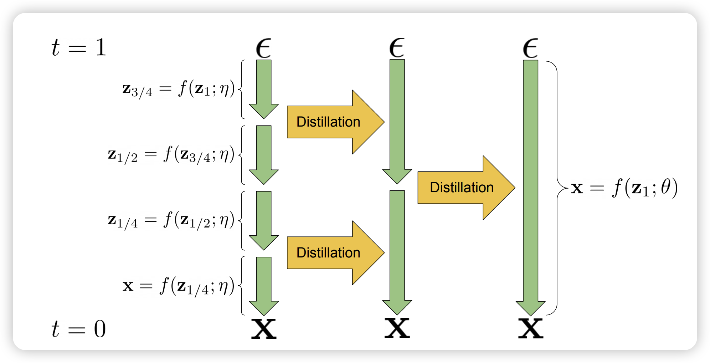</p>
</section>
<section id="consistency-models" class="level2" data-number="5.3">
<h2 data-number="5.3" class="anchored" data-anchor-id="consistency-models"><span class="header-section-number">5.3</span> Consistency Models</h2>
<p>As proposed in the <span class="citation" data-cites="ConsistencyModels2023song">(<a href="#ref-ConsistencyModels2023song" role="doc-biblioref">Song et al. 2023</a>)</span> 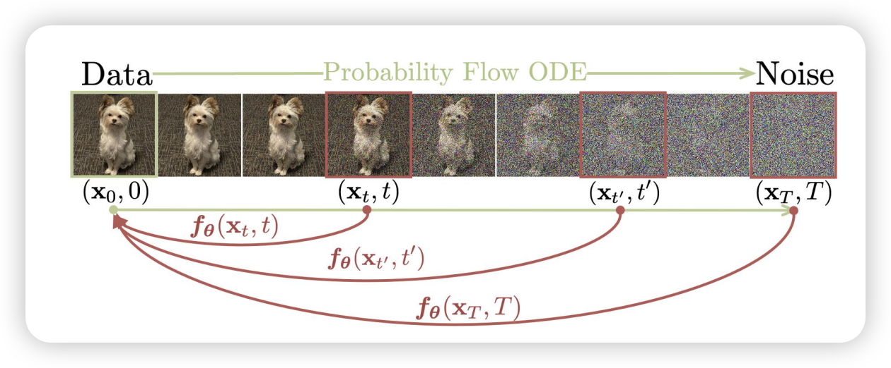 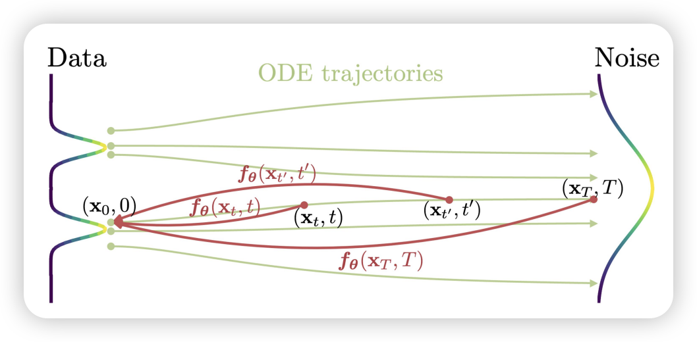</p>
</section>
<section id="latent-diffusion-model" class="level2" data-number="5.4">
<h2 data-number="5.4" class="anchored" data-anchor-id="latent-diffusion-model"><span class="header-section-number">5.4</span> Latent Diffusion Model</h2>
<p>Variance Autoencoder</p>
</section>
<section id="score-matching-1" class="level2" data-number="5.5">
<h2 data-number="5.5" class="anchored" data-anchor-id="score-matching-1"><span class="header-section-number">5.5</span> Score Matching</h2>
<p><span class="math display">\[
\nabla_{x_t} \log q(x_t|x_0)
= \nabla_x \left( - \frac{\| x_t - \sqrt{\bar{\alpha}_t} x_0 \|^2}{2(1-\bar{\alpha}_t)} \right)
= - \frac{x_t - \sqrt{\bar{\alpha}_t} x_0}{1-\bar{\alpha}_t}
\]</span></p>
<p>$$ _{x_t} q(x_t|x_0) = - = - </p>
<p>$$</p>
<p>So, can be interpreted as predicting the score <span class="math inline">\(\nabla_{x_t} \log q(x_t|x_0)\)</span> up to a scaling factor <span class="math inline">\(- \frac{1}{\sqrt{1-\bar{\alpha}_t}}\)</span></p>
<p>According to the Tweedie’s formula, we have: <span class="math display">\[
\nabla_{x_t} \log q(x_t)
= - \frac{x_t - \sqrt{\bar{\alpha}_t}\,\mathbb{E}[x_0 \mid x_t]}{1-\bar{\alpha}_t}
\]</span></p>
<p>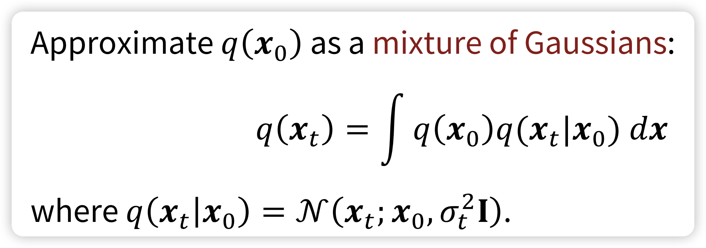 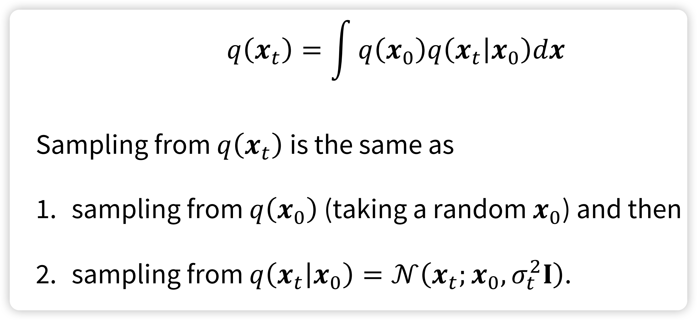</p>
<p>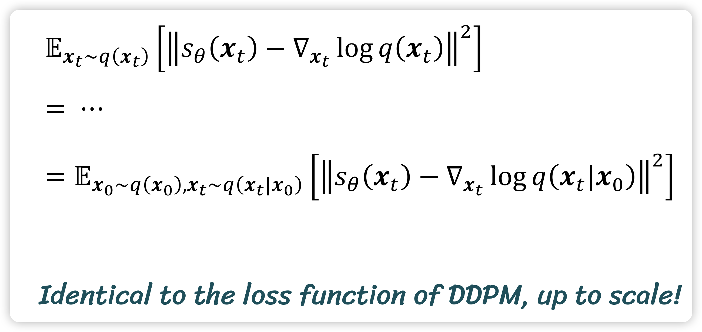</p>
<p>So, this is the Noise-Conditional Score-Based Models 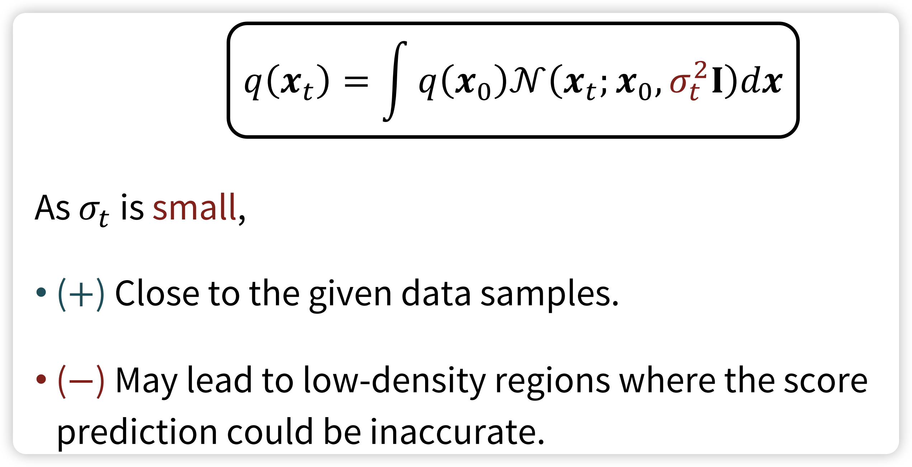</p>
<p>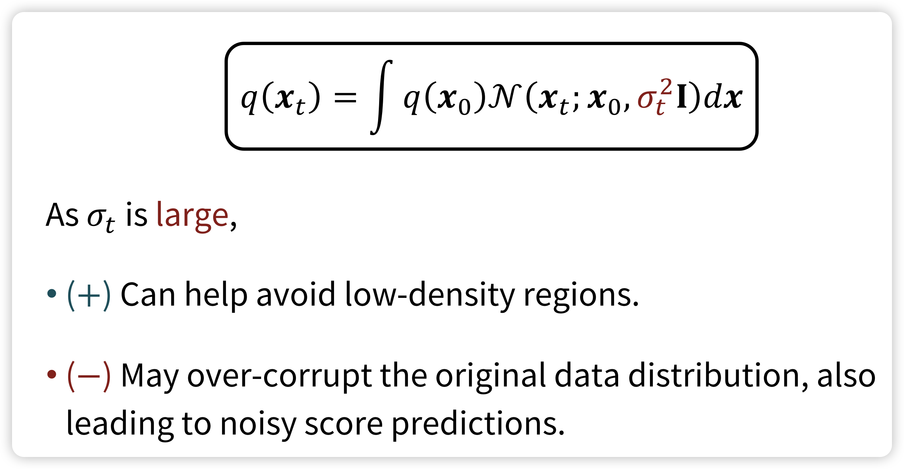</p>
<p>So, the solution is the Annealed Langevin Dynamics 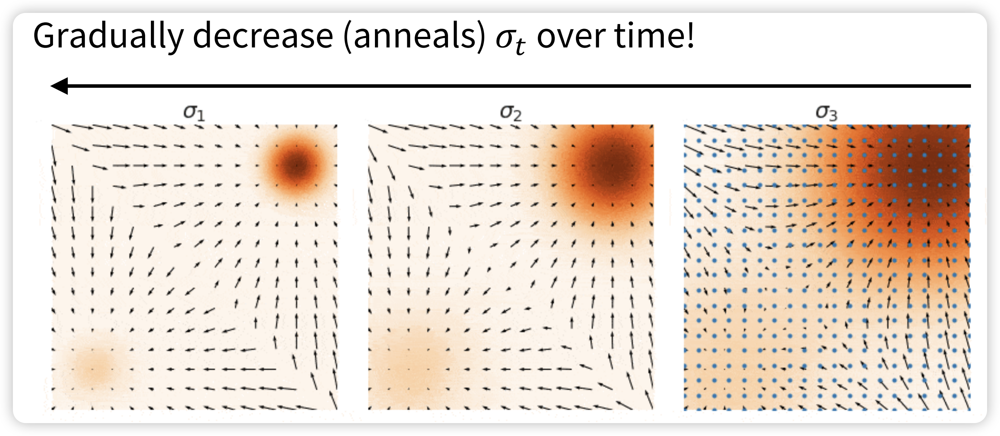 At the beginning (when <span class="math inline">\(\sigma_{t}\)</span> is large), As time progresses (and <span class="math inline">\(\sigma_{t}\)</span> decreases), 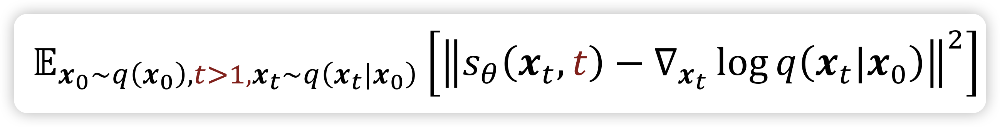</p>
</section>
</section>
<section id="from-ode-and-sde-view-point" class="level1" data-number="6">
<h1 data-number="6"><span class="header-section-number">6</span> From ODE and SDE view point</h1>
<p>Ok, we have learned a lot of the DDPM from the probabilist model view, let’s switch gear, and discuss how to get the DDPM from <strong>stochastic process view</strong>, and derive flow matching. For this Part, we will main focus on the Flow Matching, which is based on the ODE. The Score matching can understand.</p>
<section id="ode-vs.-sde" class="level2" data-number="6.1">
<h2 data-number="6.1" class="anchored" data-anchor-id="ode-vs.-sde"><span class="header-section-number">6.1</span> ODE vs.&nbsp;SDE</h2>
<p>Before talk about the ODE and SDE, let’s first understand some concepts to solid our understanding. DDPM can be viewed as the discreted version of the SDE, and SDE can be viewed as continuous version of DDPM.</p>
<section id="vector-field" class="level3" data-number="6.1.1">
<h3 data-number="6.1.1" class="anchored" data-anchor-id="vector-field"><span class="header-section-number">6.1.1</span> Vector Field</h3>
<p>Vector Field is a function that <u>assign a vector to every point in space</u>. For example: imagine a weather map, at each location, an arrow shows the wind’s direction and strength. That arrow map is a vector field.</p>
<p></p>
<p><span class="math display">\[
F: \mathbb{R}^{n} \to \mathbb{R}^{n}
\]</span></p>
<p>And every ODE <span class="math inline">\(u\)</span> is defined by a vector field, and take in two variable <span class="math inline">\(\mathrm{x}\)</span> and <span class="math inline">\(t\)</span> <span class="math display">\[
u: \mathbb{R}^{d} \times [0, 1] \to \mathbb{R}^{d}, \quad (x, t) \to u_{t}(x)
\]</span> that for every time <span class="math inline">\(t\)</span> and location <span class="math inline">\(\mathrm{x}\)</span>, we get a vector <span class="math inline">\(u_{t}(\mathrm{x})  \in \mathbb{R}^{d}\)</span> that point to some <strong>direction</strong>. Image a point in the weather map, <span class="math inline">\(x\)</span> is a point in the map, and <span class="math inline">\(u(x)\)</span> tell <span class="math inline">\(x\)</span>, which direction should go next.</p>
<p>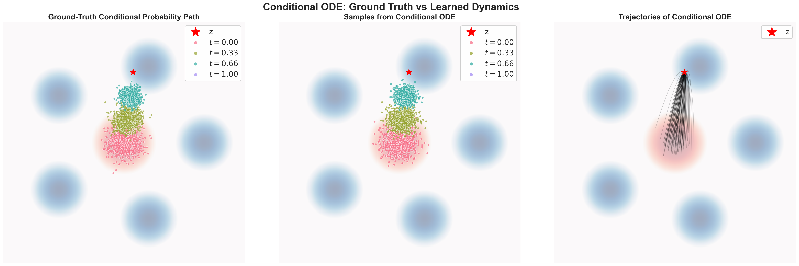</p>
<p>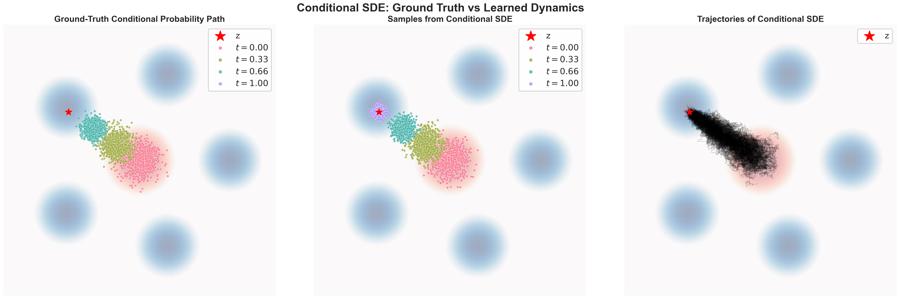</p>
<p>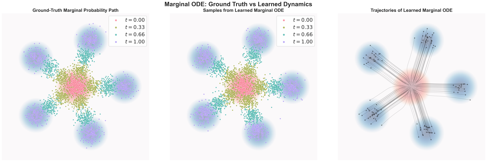</p>
<p>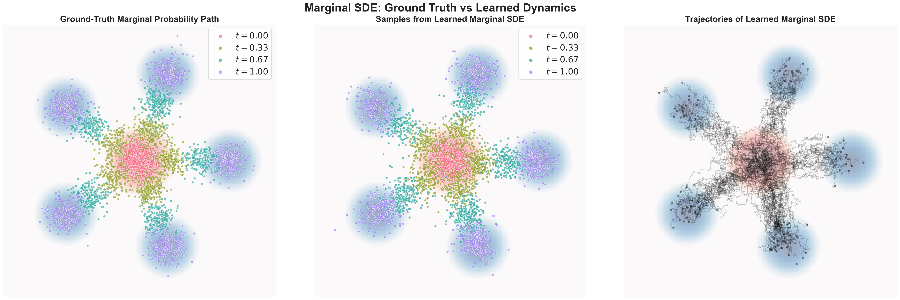</p>
<p>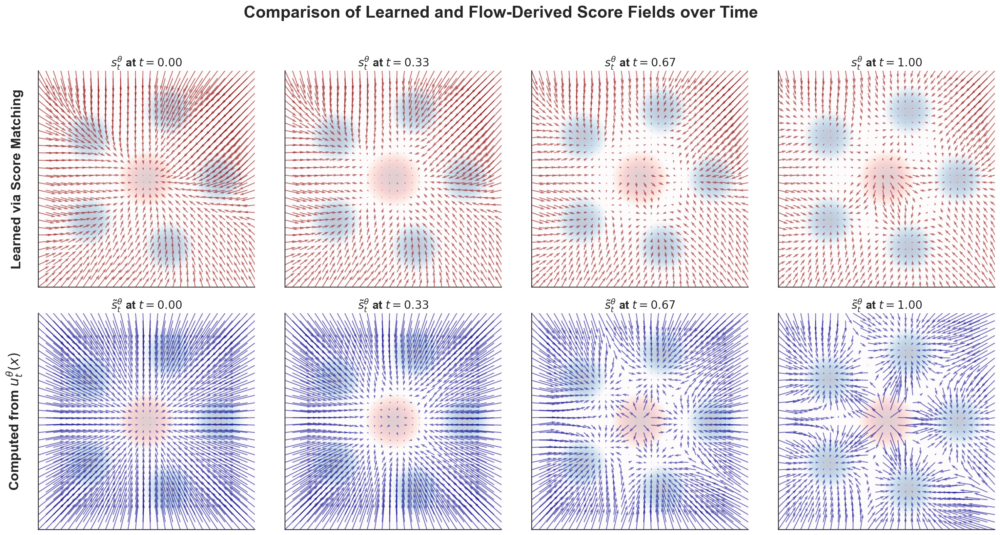</p>
<p>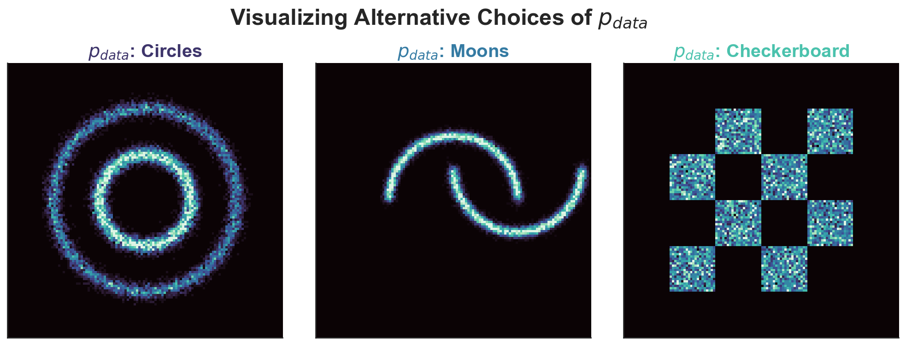</p>
<div class="callout callout-style-default callout-note callout-titled" title="Why we need $t$ in the ODE?">
<div class="callout-header d-flex align-content-center">
<div class="callout-icon-container">
<i class="callout-icon"></i>
</div>
<div class="callout-title-container flex-fill">
Why we need <span class="math inline">\(t\)</span> in the ODE?
</div>
</div>
<div class="callout-body-container callout-body">
<p>Because for every location <span class="math inline">\(\mathrm{x}\)</span>, we might arrive same location at different time, due to the random start point <span class="math inline">\(\mathrm{x}_{0}\)</span></p>
</div>
</div>
<div class="quarto-figure quarto-figure-center">
<figure class="figure">
<p></p>
<figcaption>learned_marginals_norm</figcaption>
</figure>
</div>
<div class="quarto-figure quarto-figure-center">
<figure class="figure">
<p>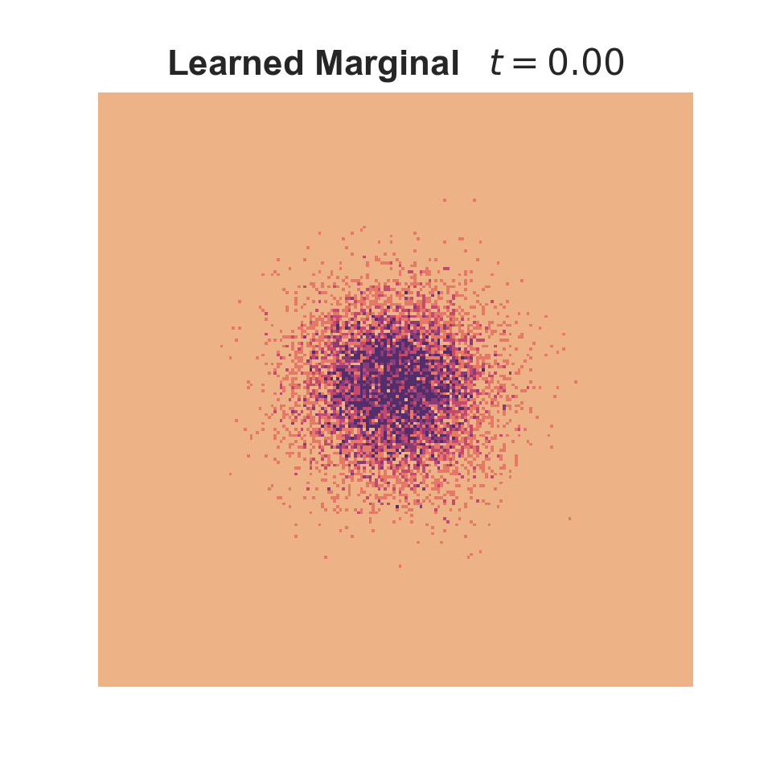</p>
<figcaption>learned_marginals_norm</figcaption>
</figure>
</div>
<div class="quarto-figure quarto-figure-center">
<figure class="figure">
<p>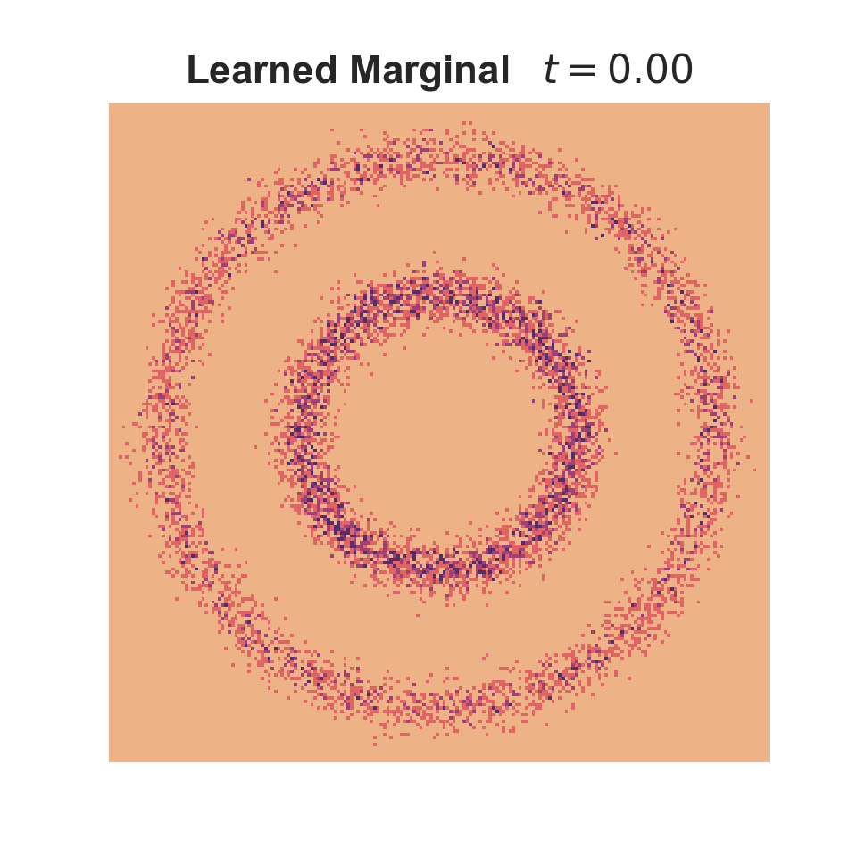</p>
<figcaption>learned_marginals_circle</figcaption>
</figure>
</div>
<p>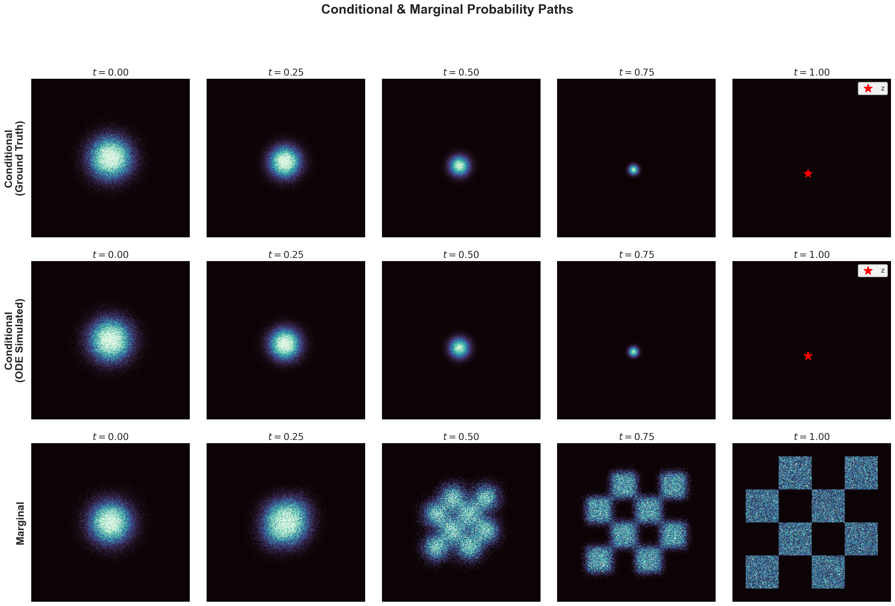</p>
<p> <span class="math display">\[
\begin{align}
\frac{d}{dt}\mathrm{x}_{t } &amp;= u_{t}(\mathrm{x}_{t}) \\
\mathrm{x_{0}}&amp;=x_{0}
\end{align}
\]</span></p>
<p>So, another question we want to ask it: when we start at <span class="math inline">\(x_{0}\)</span>, where are we at <span class="math inline">\(t\)</span>. This can be solved by flow, which is a solution to the ODE:</p>
<p>$$</p>
<p><span class="math display">\[\begin{align}
\psi : \mathbb{R}^d \times [0,1] \mapsto \mathbb{R}^d &amp;,
\quad (x_0, t) \mapsto \psi_t(x_0) \\

\frac{d}{dt} \psi_t(x_0) &amp; = u_t(\psi_t(x_0)) \\

\psi_0(x_0)&amp; = x_0\\
\end{align}\]</span> $$</p>
<p><span class="math display">\[
\mathrm{x}_{1} \sim  p_{\text{data}}  
\]</span> However, we can not solve the problem. But we can use the numerical analysis. One of the simplest and intuitive methods is Euler method:</p>
<p><span class="math display">\[
\mathrm{x}_{t + h} = \mathrm{x}_{t} +  h u_{t}(\mathrm{x}_{t}) \quad (t = 0, h, 2h, 3h, \dots,  1- h)
\]</span></p>
<p>Stochastic Differential Equations extend the ODEs with stochastic(random) trajectories, which is also known as <strong>stochastic process</strong>. The stochastic is add through a <strong>Brownian motion</strong>. A Brownain motion <span class="math inline">\(W = (W_{t})_{0\leq t \leq 1}\)</span> is a stochastic process such that: <span class="math inline">\(W_{0} = 0\)</span>: - Normal Increments: <span class="math inline">\(W_{t} - W_{s} \sim \mathcal{N}(0, (t - s)\mathbf{I}_{d})\)</span> for all <span class="math inline">\(0 \leq s \leq t\)</span> - Independent Increments</p>
<p>Brownian Motion is also known as Wiener Process: <span class="math display">\[
W_{t + h} = W_{t} + \sqrt{ h }\epsilon_{t}, \quad \text{where} \ \epsilon_{t} \sim \mathcal{N}(0, \mathbf{I}_{d})
\]</span></p>
<p>Ornstein-Unlenbeck(OU) process</p>
<p>Euler-Maruyama Method is a numerical method.</p>
<div class="quarto-figure quarto-figure-center">
<figure class="figure">
<p>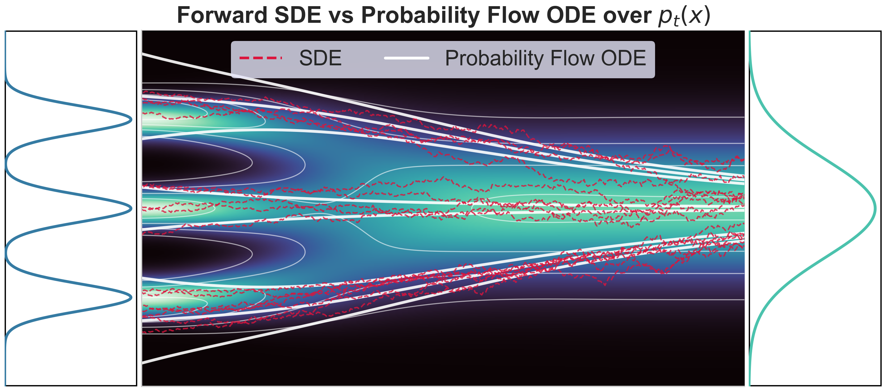</p>
<figcaption>forward_panel_with_side_strips_full</figcaption>
</figure>
</div>
<div class="quarto-figure quarto-figure-center">
<figure class="figure">
<p>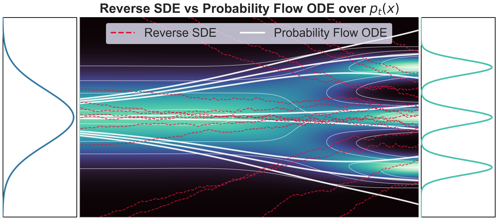</p>
<figcaption>reverse_panel_with_side_strips_full</figcaption>
</figure>
</div>
</section>
</section>
<section id="conditional-vector-field-marginal-vector-field" class="level2" data-number="6.2">
<h2 data-number="6.2" class="anchored" data-anchor-id="conditional-vector-field-marginal-vector-field"><span class="header-section-number">6.2</span> Conditional Vector Field &amp; Marginal Vector Field</h2>
<p>Given data point <span class="math inline">\(\mathrm{z}\)</span>, we can construct conditional vector field that: <span class="math display">\[
\frac{d}{dt}\mathrm{x}_{t} = u_{t}^{\text{target}}(\mathrm{x}_{t} | \mathrm{z})
\]</span> where, by following the ODE <span class="math inline">\(u_{t}^{\text{target}}(\mathrm{x}_{t} | \mathrm{z})\)</span>, the <span class="math inline">\(\mathrm{x}_{t}\)</span> will end in the data point <span class="math inline">\(\mathrm{z}\)</span>. However, what we actually want is the marginal vector field: <span class="math display">\[
\begin{split}
u_{t}^{\text{target}}(\mathrm{x}_{t} )
&amp;= \int u_{t}^{\text{target}}(\mathrm{x}_{t} | \mathrm{z}) p(\mathrm{z} | \mathrm{x}) \, d\mathrm{z} \\
&amp;=  \int u_{t}^{\text{target}}(\mathrm{x}_{t} | \mathrm{z}) \frac{p_{t}(\mathrm{x}|\mathrm{z})p_{\text{data}}(\mathrm{z})}{p_{t}(\mathrm{x})} \, d\mathrm{z}  \\
\end{split}
\]</span></p>
<p>This is statisfy the property we want. We can derive is through continuity equation.</p>
<p><span class="math display">\[
\begin{split}
\mathcal{L}_{FM}(\theta) = \mathbb{E}_{t \sim [0,1], \mathrm{z} \sim p_{data}, \mathrm{x_{t}} \sim p_{t}(\mathrm{x}_{t} | \mathrm{z})} \left[\| u_{t}^{\theta}(\mathrm{x}_{t}) - u_{t}^{\text{target}}(\mathrm{x}_{t}) \|^{2} \right]
\end{split}
\]</span></p>
<p>One problem of this is that <span class="math inline">\(u_{t}^{\text{target}}(\mathrm{x}_{t} )\)</span> is intractable due to the marginal over high-dimensional.</p>
<p>Let’s rewrite the <span class="math inline">\(\mathcal{L}_{FM}\)</span>, by using the factor <span class="math inline">\(\|a- b \|^{2} = \|a\|^{2} - 2a^{T}b + \|b\|^{2}\)</span>:</p>
<p><span class="math display">\[
\begin{split}
\mathcal{L}_{FM}(\theta)
&amp;= \mathbb{E}_{t\sim[0,1],\, z\sim p_{\rm data},\, x_t\sim p_t(x_t|z)}
\left[\|u^\theta_t(x_t)-u^{\rm target}_t(x_t)\|^2\right] \\
&amp;= \mathbb{E}_{t \sim \text{Unif},\, z \sim p_{\text{data}},\, x \sim p_t(\cdot|z)}\left[\|u^\theta_t(x_t)\|^2\right]
-2\,\mathbb{E}_{t \sim \text{Unif},\,  x \sim p_t(\cdot|z)}\left[u^\theta_t(x_t)^{T} u^{\rm target}_t(x_t)\right]
+\underbrace{ \mathbb{E}_{t \sim \text{Unif},\,  x \sim p_t(\cdot|z)}\left[\|u^{\rm target}_t(x_t)\|^2\right] }_{ C_{1} }
\end{split}
\]</span></p>
<p>As we can see, the third term is the constant w.r.t to the <span class="math inline">\(\theta\)</span>, let check the second term: <span class="math display">\[
\begin{split}
\mathbb{E}_{t \sim \text{Unif},\, x \sim p_t}
\!\left[u_t^\theta(x)^{T} u_t^{\text{target}}(x)\right]
&amp;\overset{(i)}{=}
\int_0^1 \!\!\int p_t(x)\, u_t^\theta(x)^{T} u_t^{\text{target}}(x)\, dx\, dt \\
&amp;\overset{(ii)}{=}
\int_0^1 \!\!\int p_t(x)\, u_t^\theta(x)^{T}
\left[\int u_t^{\text{target}}(x|z)\,
\frac{p_t(x|z)\,p_{\text{data}}(z)}{p_t(x)}\, dz \right] dx\, dt \\
&amp;\overset{(iii)}{=}
\int_0^1 \!\!\int\!\!\int u_t^\theta(x)^{T} u_t^{\text{target}}(x|z)\,
p_t(x|z)\, p_{\text{data}}(z)\, dz\, dx\, dt \\
&amp;\overset{(iv)}{=}
\mathbb{E}_{t \sim \text{Unif},\, z \sim p_{\text{data}},\, x \sim p_t(\cdot|z)}
\!\left[u_t^\theta(x)^{T} u_t^{\text{target}}(x|z)\right]
\end{split}
\]</span></p>
<p>So, we can get that: <span class="math display">\[
\begin{split}
\mathcal{L}_{FM}
&amp; = \mathbb{E}_{t \sim \text{Unif},\, z \sim p_{\text{data}},\, x \sim p_t(\cdot|z)}\left[\|u^\theta_t(x_t)\|^2\right]
-2\,\mathbb{E}_{t \sim \text{Unif},\,  x \sim p_t(\cdot|z)}\left[u^\theta_t(x_t)^{T} u^{\rm target}_t(x_t)\right] + C_{1} \\
&amp;=  \mathbb{E}_{t \sim \text{Unif},\, z \sim p_{\text{data}},\, x \sim p_t(\cdot|z)}\left[\|u^\theta_t(x_t)\|^2\right]  - 2 \mathbb{E}_{t \sim \text{Unif},\, z \sim p_{\text{data}},\, x \sim p_t(\cdot|z)}
\left[u_t^\theta(x)^{T} u_t^{\text{target}}(x|z)\right] + C_{1}\\
&amp;=  \mathbb{E}_{t \sim \text{Unif},\, z \sim p_{\text{data}},\, x \sim p_t(\cdot|z)}\left[\|u^\theta_t(x_t)\|^2 - 2u_t^\theta(x)^{T} u_t^{\text{target}}(x|z)\right]  + C_{1} \\
&amp;=  \mathbb{E}_{t \sim \text{Unif},\, z \sim p_{\text{data}},\, x \sim p_t(\cdot|z)}\left[\|u^\theta_t(x_t)\|^2 - 2u_t^\theta(x)^{T} u_t^{\text{target}}(x|z) + \|u_{t}^{\text{target}}(\mathrm{x}_{t} | \mathrm{z})\|^{2}  - \|u_{t}^{\text{target}}(\mathrm{x}_{t} | \mathrm{z}) \|^{2} \right]  + C_{1} \\
&amp;=  \mathbb{E}_{t \sim \text{Unif},\, z \sim p_{\text{data}},\, x \sim p_t(\cdot|z)}\left[\|u^\theta_t(x_t)-u_{t}^{\text{target}}(\mathrm{x}_{t} | \mathrm{z})\|^2  - \|u_{t}^{\text{target}}(\mathrm{x}_{t} | \mathrm{z}) \|^{2} \right]  + C_{1} \\
&amp;=  \mathbb{E}_{t \sim \text{Unif},\, z \sim p_{\text{data}},\, x \sim p_t(\cdot|z)}\left[\|u^\theta_t(x_t)-u_{t}^{\text{target}}(\mathrm{x}_{t} | \mathrm{z})\|^2   \right] \underbrace{ -\mathbb{E} \left[\|u_{t}^{\text{target}}(\mathrm{x}_{t} | \mathrm{z}) \|^{2} \right] }_{ C_{2} } + C_{1} \\
&amp;=  \mathcal{L}_{CFM}(\theta) + C_{2} + C_{1} \\
\end{split}
\]</span></p>
<p>As we can see the <span class="math inline">\(\mathcal{L}_{CFM}\)</span> is the <span class="math inline">\(\mathcal{L}_{FM}\)</span> to some constant <span class="math inline">\(C\)</span>. So, we can just minimizing <span class="math inline">\(\mathcal{L}_{CFM}\)</span>, we will get the minizer value of <span class="math inline">\(\mathcal{L}_{FM}\)</span> as well. <span class="math display">\[
\mathcal{L}_{CFM} = \mathbb{E}_{t \sim \text{Unif},\, z \sim p_{\text{data}},\, x \sim p_t(\cdot|z)}\left[\|u^\theta_t(x_t)-u_{t}^{\text{target}}(\mathrm{x}_{t} | \mathrm{z})\|^2   \right]
\]</span></p>
<p>From there, we get the Flow Matching. This is just a simple regression problem with respect to the vector field. Now, let’s see how to derive the score matching from the SDE ## Conditional Score Function &amp; Marginal Score Function</p>
<p>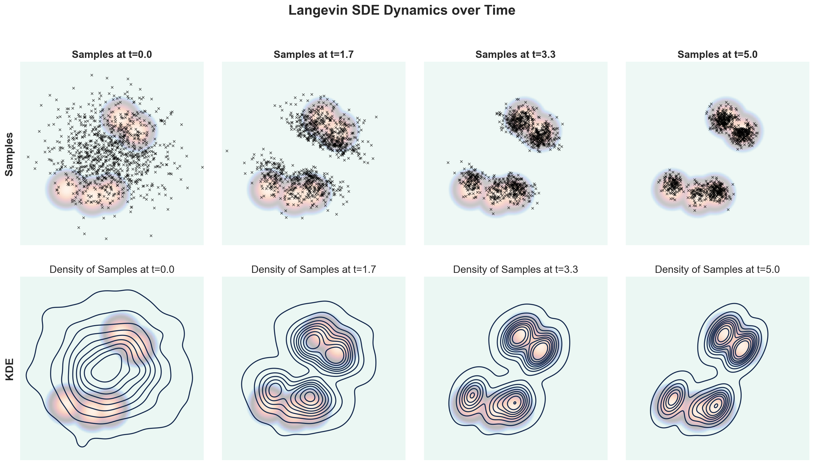</p>
<div class="quarto-figure quarto-figure-center">
<figure class="figure">
<p>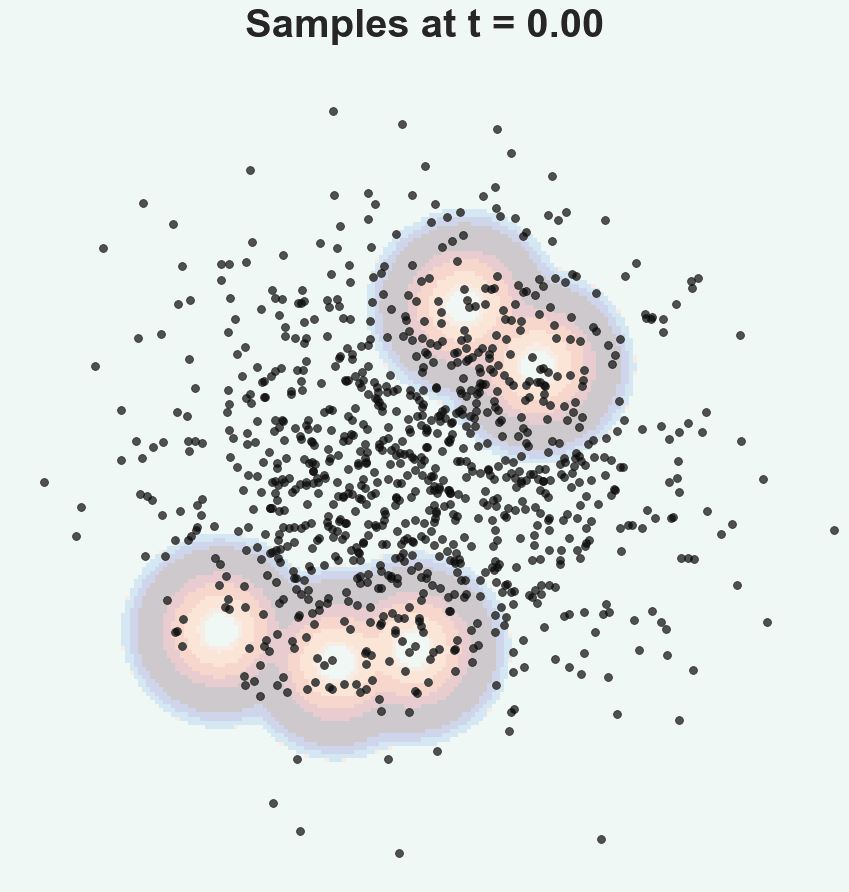</p>
<figcaption>samples_evolution</figcaption>
</figure>
</div>
<div class="quarto-figure quarto-figure-center">
<figure class="figure">
<p></p>
<figcaption>density_evolution</figcaption>
</figure>
</div>
<p>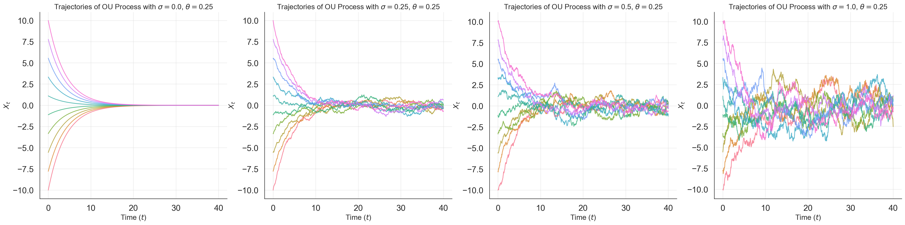</p>
<p>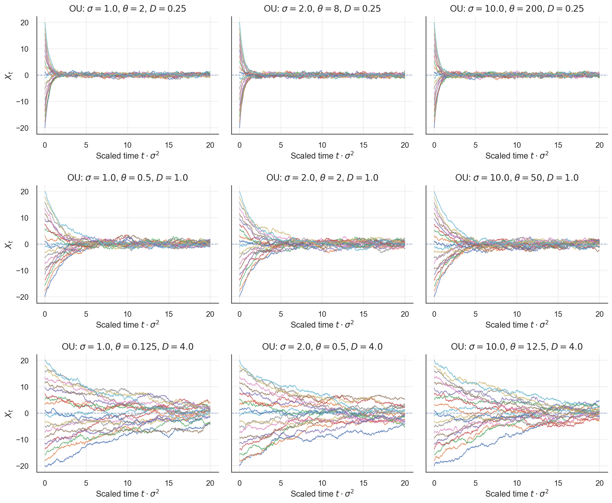</p>
<p>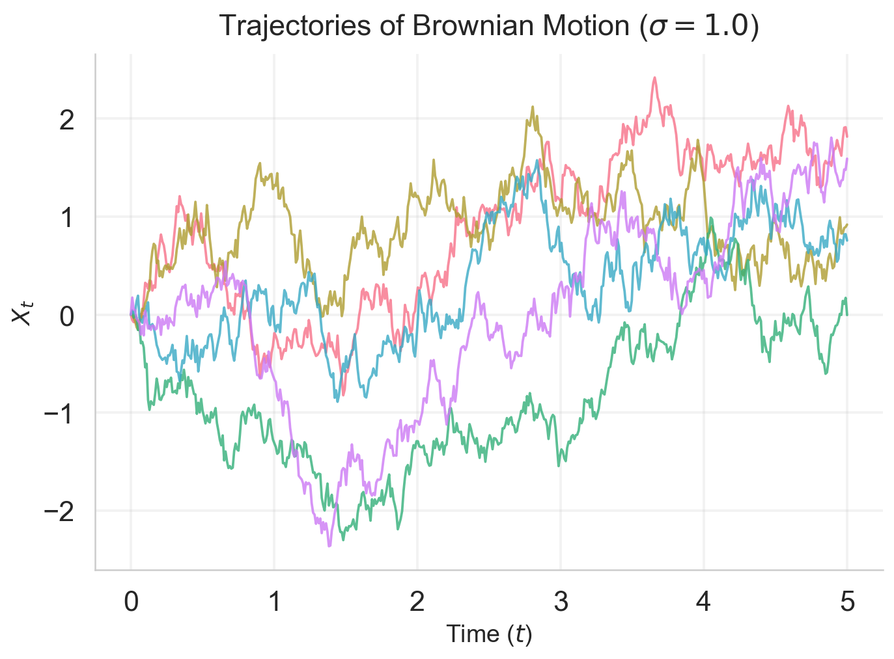</p>
</section>
<section id="mean-flow" class="level2" data-number="6.3">
<h2 data-number="6.3" class="anchored" data-anchor-id="mean-flow"><span class="header-section-number">6.3</span> Mean Flow</h2>
<p>Mean Flows for One-step Generative Modeling</p>
<p>MMDiT</p>
</section>
</section>
<section id="model-architecture" class="level1" data-number="7">
<h1 data-number="7"><span class="header-section-number">7</span> Model Architecture</h1>
<section id="u-net" class="level2" data-number="7.1">
<h2 data-number="7.1" class="anchored" data-anchor-id="u-net"><span class="header-section-number">7.1</span> U-Net</h2>
<p>U-Net: Convolutional Networks for Biomedical Image Segmentation</p>
<p>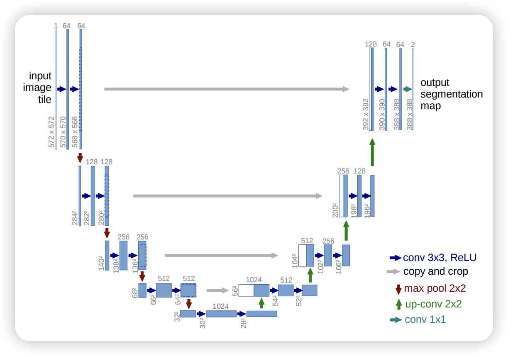</p>
<div class="callout-tldr" title="**Takeaway 1**">
<ul>
<li>Summarize the most important point of this section in 1–2 sentences.<br>
</li>
<li>Keep it concise and action-oriented so readers walk away with clarity.</li>
</ul>
</div>
<div class="callout-question" title="**Think About It**">
<ul>
<li>Pose a reflective or guiding question to the reader.<br>
</li>
<li>Example: <em>How would this method scale if we doubled the dataset size?</em></li>
</ul>
</div>
</section>
<section id="control-net" class="level2" data-number="7.2">
<h2 data-number="7.2" class="anchored" data-anchor-id="control-net"><span class="header-section-number">7.2</span> Control Net</h2>
<p>Adding Conditional Control to Text-to-Image Diffusion Models</p>
<p>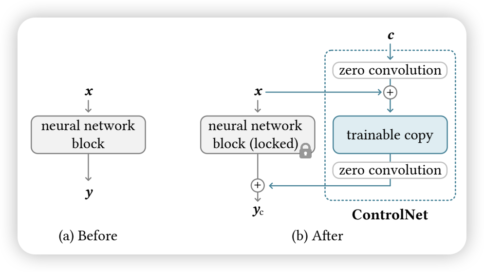</p>
</section>
<section id="diffusion-transformer-dit" class="level2" data-number="7.3">
<h2 data-number="7.3" class="anchored" data-anchor-id="diffusion-transformer-dit"><span class="header-section-number">7.3</span> Diffusion Transformer (DiT)</h2>
<p>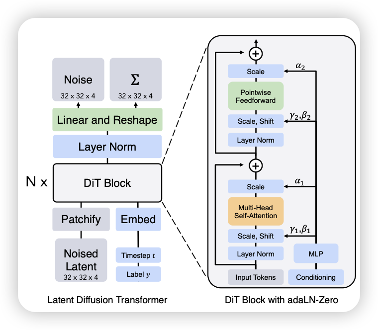</p>
</section>
</section>
<section id="applications" class="level1" data-number="8">
<h1 data-number="8"><span class="header-section-number">8</span> Applications</h1>
<section id="text-image-generation" class="level2" data-number="8.1">
<h2 data-number="8.1" class="anchored" data-anchor-id="text-image-generation"><span class="header-section-number">8.1</span> Text-Image Generation</h2>
<section id="imagen" class="level3" data-number="8.1.1">
<h3 data-number="8.1.1" class="anchored" data-anchor-id="imagen"><span class="header-section-number">8.1.1</span> Imagen</h3>
<p>Photorealistic Text-to-Image Diffusion Models with Deep Language Understanding</p>
</section>
<section id="dalle" class="level3" data-number="8.1.2">
<h3 data-number="8.1.2" class="anchored" data-anchor-id="dalle"><span class="header-section-number">8.1.2</span> DALL·E</h3>
</section>
<section id="stable-diffusion" class="level3" data-number="8.1.3">
<h3 data-number="8.1.3" class="anchored" data-anchor-id="stable-diffusion"><span class="header-section-number">8.1.3</span> Stable Diffusion</h3>
<p>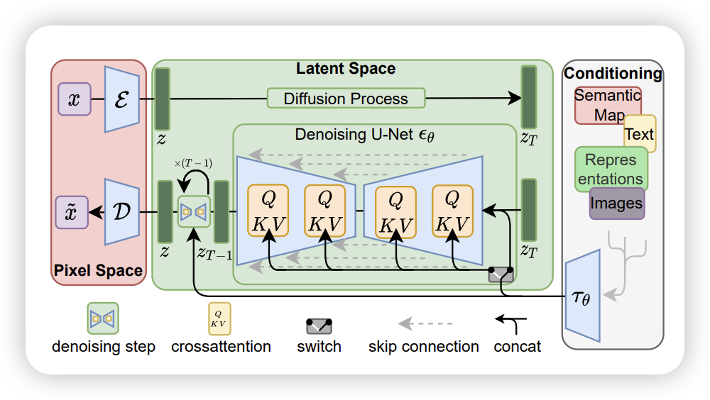</p>
</section>
</section>
<section id="text-video-generation" class="level2" data-number="8.2">
<h2 data-number="8.2" class="anchored" data-anchor-id="text-video-generation"><span class="header-section-number">8.2</span> Text-Video Generation</h2>
<section id="meta-movie-gen-video" class="level3" data-number="8.2.1">
<h3 data-number="8.2.1" class="anchored" data-anchor-id="meta-movie-gen-video"><span class="header-section-number">8.2.1</span> Meta Movie Gen Video</h3>
<p>Movie Gen: A Cast of Media Foundation Models</p>
</section>
<section id="veo" class="level3" data-number="8.2.2">
<h3 data-number="8.2.2" class="anchored" data-anchor-id="veo"><span class="header-section-number">8.2.2</span> Veo</h3>
</section>
</section>
<section id="language-modeling" class="level2" data-number="8.3">
<h2 data-number="8.3" class="anchored" data-anchor-id="language-modeling"><span class="header-section-number">8.3</span> Language Modeling</h2>
</section>
<section id="diffusion-policy" class="level2" data-number="8.4">
<h2 data-number="8.4" class="anchored" data-anchor-id="diffusion-policy"><span class="header-section-number">8.4</span> Diffusion Policy</h2>
<p>Rectified Flow: Flow Straight and Fast: Learning to Generate and Transfer Data with Rectified Flow https://arxiv.org/pdf/2209.03003</p>
<p>Mean Flow Mean Flows for One-step Generative Modeling https://arxiv.org/pdf/2505.13447</p>
</section>
</section>
<section id="learning-resource" class="level1" data-number="9">
<h1 data-number="9"><span class="header-section-number">9</span> Learning Resource</h1>
<p>There are many good learning resource available online, thanks those who are opening those content:</p>
<p>Lectures:</p>
<ul>
<li><a href="https://www.practical-diffusion.org/">MIT 6.S183: A Practical Introduction to Diffusion Models</a>:</li>
<li><a href="https://diffusion.csail.mit.edu/">MIT 6.S184: Generative AI with Stochastic Differential Equations</a>: focusing on diffusion models through the lens of SDEs. The ODE/SDE is based on this lecture</li>
<li><a href="https://mhsung.github.io/kaist-cs492d-fall-2024/">KAIST: CS492(D): Diffusion Models and Their Applications</a>: More comprehensive introduction to the diffusion models</li>
<li><a href="https://deepgenerativemodels.github.io/">Stanford CS236 Deep Generative Models</a>: Introduce different generative models from VAE to GAN and DDPM</li>
</ul>
<p>Blogs:</p>
<ul>
<li><a href="https://yang-song.net/blog/2021/score/">Generative Modeling by Estimating Gradients of the Data Distribution By Yang Song</a></li>
<li><a href="https://lilianweng.github.io/posts/2021-07-11-diffusion-models/#nice">What are Diffusion Models? By Lilian Wang</a></li>
</ul>


</section>

<a onclick="window.scrollTo(0, 0); return false;" role="button" id="quarto-back-to-top"><i class="bi bi-arrow-up"></i> Back to top</a><div id="quarto-appendix" class="default"><section class="quarto-appendix-contents" role="doc-bibliography" id="quarto-bibliography"><h2 class="anchored quarto-appendix-heading">References</h2><div id="refs" class="references csl-bib-body hanging-indent" data-entry-spacing="0" role="list">
<div id="ref-DenoisingDiffusionProbabilistic2020ho" class="csl-entry" role="listitem">
Ho, Jonathan, Ajay Jain, and Pieter Abbeel. 2020. <span>“Denoising <span>Diffusion Probabilistic Models</span>.”</span> arXiv. <a href="https://doi.org/10.48550/arXiv.2006.11239">https://doi.org/10.48550/arXiv.2006.11239</a>.
</div>
<div id="ref-AutoEncodingVariationalBayes2022kingma" class="csl-entry" role="listitem">
Kingma, Diederik P., and Max Welling. 2022. <span>“Auto-<span>Encoding Variational Bayes</span>.”</span> arXiv. <a href="https://doi.org/10.48550/arXiv.1312.6114">https://doi.org/10.48550/arXiv.1312.6114</a>.
</div>
<div id="ref-ConsistencyModels2023song" class="csl-entry" role="listitem">
Song, Yang, Prafulla Dhariwal, Mark Chen, and Ilya Sutskever. 2023. <span>“Consistency <span>Models</span>.”</span> arXiv. <a href="https://doi.org/10.48550/arXiv.2303.01469">https://doi.org/10.48550/arXiv.2303.01469</a>.
</div>
<div id="ref-ScoreBasedGenerativeModeling2021song" class="csl-entry" role="listitem">
Song, Yang, Jascha Sohl-Dickstein, Diederik P. Kingma, Abhishek Kumar, Stefano Ermon, and Ben Poole. 2021. <span>“Score-<span>Based Generative Modeling</span> Through <span>Stochastic Differential Equations</span>.”</span> arXiv. <a href="https://doi.org/10.48550/arXiv.2011.13456">https://doi.org/10.48550/arXiv.2011.13456</a>.
</div>
</div></section></div></main> <!-- /main -->
<script id="quarto-html-after-body" type="application/javascript">
  window.document.addEventListener("DOMContentLoaded", function (event) {
    // Ensure there is a toggle, if there isn't float one in the top right
    if (window.document.querySelector('.quarto-color-scheme-toggle') === null) {
      const a = window.document.createElement('a');
      a.classList.add('top-right');
      a.classList.add('quarto-color-scheme-toggle');
      a.href = "";
      a.onclick = function() { try { window.quartoToggleColorScheme(); } catch {} return false; };
      const i = window.document.createElement("i");
      i.classList.add('bi');
      a.appendChild(i);
      window.document.body.appendChild(a);
    }
    setColorSchemeToggle(hasAlternateSentinel())
    const icon = "";
    const anchorJS = new window.AnchorJS();
    anchorJS.options = {
      placement: 'right',
      icon: icon
    };
    anchorJS.add('.anchored');
    const isCodeAnnotation = (el) => {
      for (const clz of el.classList) {
        if (clz.startsWith('code-annotation-')) {                     
          return true;
        }
      }
      return false;
    }
    const onCopySuccess = function(e) {
      // button target
      const button = e.trigger;
      // don't keep focus
      button.blur();
      // flash "checked"
      button.classList.add('code-copy-button-checked');
      var currentTitle = button.getAttribute("title");
      button.setAttribute("title", "Copied!");
      let tooltip;
      if (window.bootstrap) {
        button.setAttribute("data-bs-toggle", "tooltip");
        button.setAttribute("data-bs-placement", "left");
        button.setAttribute("data-bs-title", "Copied!");
        tooltip = new bootstrap.Tooltip(button, 
          { trigger: "manual", 
            customClass: "code-copy-button-tooltip",
            offset: [0, -8]});
        tooltip.show();    
      }
      setTimeout(function() {
        if (tooltip) {
          tooltip.hide();
          button.removeAttribute("data-bs-title");
          button.removeAttribute("data-bs-toggle");
          button.removeAttribute("data-bs-placement");
        }
        button.setAttribute("title", currentTitle);
        button.classList.remove('code-copy-button-checked');
      }, 1000);
      // clear code selection
      e.clearSelection();
    }
    const getTextToCopy = function(trigger) {
        const codeEl = trigger.previousElementSibling.cloneNode(true);
        for (const childEl of codeEl.children) {
          if (isCodeAnnotation(childEl)) {
            childEl.remove();
          }
        }
        return codeEl.innerText;
    }
    const clipboard = new window.ClipboardJS('.code-copy-button:not([data-in-quarto-modal])', {
      text: getTextToCopy
    });
    clipboard.on('success', onCopySuccess);
    if (window.document.getElementById('quarto-embedded-source-code-modal')) {
      const clipboardModal = new window.ClipboardJS('.code-copy-button[data-in-quarto-modal]', {
        text: getTextToCopy,
        container: window.document.getElementById('quarto-embedded-source-code-modal')
      });
      clipboardModal.on('success', onCopySuccess);
    }
      var localhostRegex = new RegExp(/^(?:http|https):\/\/localhost\:?[0-9]*\//);
      var mailtoRegex = new RegExp(/^mailto:/);
        var filterRegex = new RegExp('/' + window.location.host + '/');
      var isInternal = (href) => {
          return filterRegex.test(href) || localhostRegex.test(href) || mailtoRegex.test(href);
      }
      // Inspect non-navigation links and adorn them if external
     var links = window.document.querySelectorAll('a[href]:not(.nav-link):not(.navbar-brand):not(.toc-action):not(.sidebar-link):not(.sidebar-item-toggle):not(.pagination-link):not(.no-external):not([aria-hidden]):not(.dropdown-item):not(.quarto-navigation-tool):not(.about-link)');
      for (var i=0; i<links.length; i++) {
        const link = links[i];
        if (!isInternal(link.href)) {
          // undo the damage that might have been done by quarto-nav.js in the case of
          // links that we want to consider external
          if (link.dataset.originalHref !== undefined) {
            link.href = link.dataset.originalHref;
          }
            // target, if specified
            link.setAttribute("target", "_blank");
            if (link.getAttribute("rel") === null) {
              link.setAttribute("rel", "noopener");
            }
        }
      }
    function tippyHover(el, contentFn, onTriggerFn, onUntriggerFn) {
      const config = {
        allowHTML: true,
        maxWidth: 500,
        delay: 100,
        arrow: false,
        appendTo: function(el) {
            return el.parentElement;
        },
        interactive: true,
        interactiveBorder: 10,
        theme: 'quarto',
        placement: 'bottom-start',
      };
      if (contentFn) {
        config.content = contentFn;
      }
      if (onTriggerFn) {
        config.onTrigger = onTriggerFn;
      }
      if (onUntriggerFn) {
        config.onUntrigger = onUntriggerFn;
      }
      window.tippy(el, config); 
    }
    const noterefs = window.document.querySelectorAll('a[role="doc-noteref"]');
    for (var i=0; i<noterefs.length; i++) {
      const ref = noterefs[i];
      tippyHover(ref, function() {
        // use id or data attribute instead here
        let href = ref.getAttribute('data-footnote-href') || ref.getAttribute('href');
        try { href = new URL(href).hash; } catch {}
        const id = href.replace(/^#\/?/, "");
        const note = window.document.getElementById(id);
        if (note) {
          return note.innerHTML;
        } else {
          return "";
        }
      });
    }
    const xrefs = window.document.querySelectorAll('a.quarto-xref');
    const processXRef = (id, note) => {
      // Strip column container classes
      const stripColumnClz = (el) => {
        el.classList.remove("page-full", "page-columns");
        if (el.children) {
          for (const child of el.children) {
            stripColumnClz(child);
          }
        }
      }
      stripColumnClz(note)
      if (id === null || id.startsWith('sec-')) {
        // Special case sections, only their first couple elements
        const container = document.createElement("div");
        if (note.children && note.children.length > 2) {
          container.appendChild(note.children[0].cloneNode(true));
          for (let i = 1; i < note.children.length; i++) {
            const child = note.children[i];
            if (child.tagName === "P" && child.innerText === "") {
              continue;
            } else {
              container.appendChild(child.cloneNode(true));
              break;
            }
          }
          if (window.Quarto?.typesetMath) {
            window.Quarto.typesetMath(container);
          }
          return container.innerHTML
        } else {
          if (window.Quarto?.typesetMath) {
            window.Quarto.typesetMath(note);
          }
          return note.innerHTML;
        }
      } else {
        // Remove any anchor links if they are present
        const anchorLink = note.querySelector('a.anchorjs-link');
        if (anchorLink) {
          anchorLink.remove();
        }
        if (window.Quarto?.typesetMath) {
          window.Quarto.typesetMath(note);
        }
        if (note.classList.contains("callout")) {
          return note.outerHTML;
        } else {
          return note.innerHTML;
        }
      }
    }
    for (var i=0; i<xrefs.length; i++) {
      const xref = xrefs[i];
      tippyHover(xref, undefined, function(instance) {
        instance.disable();
        let url = xref.getAttribute('href');
        let hash = undefined; 
        if (url.startsWith('#')) {
          hash = url;
        } else {
          try { hash = new URL(url).hash; } catch {}
        }
        if (hash) {
          const id = hash.replace(/^#\/?/, "");
          const note = window.document.getElementById(id);
          if (note !== null) {
            try {
              const html = processXRef(id, note.cloneNode(true));
              instance.setContent(html);
            } finally {
              instance.enable();
              instance.show();
            }
          } else {
            // See if we can fetch this
            fetch(url.split('#')[0])
            .then(res => res.text())
            .then(html => {
              const parser = new DOMParser();
              const htmlDoc = parser.parseFromString(html, "text/html");
              const note = htmlDoc.getElementById(id);
              if (note !== null) {
                const html = processXRef(id, note);
                instance.setContent(html);
              } 
            }).finally(() => {
              instance.enable();
              instance.show();
            });
          }
        } else {
          // See if we can fetch a full url (with no hash to target)
          // This is a special case and we should probably do some content thinning / targeting
          fetch(url)
          .then(res => res.text())
          .then(html => {
            const parser = new DOMParser();
            const htmlDoc = parser.parseFromString(html, "text/html");
            const note = htmlDoc.querySelector('main.content');
            if (note !== null) {
              // This should only happen for chapter cross references
              // (since there is no id in the URL)
              // remove the first header
              if (note.children.length > 0 && note.children[0].tagName === "HEADER") {
                note.children[0].remove();
              }
              const html = processXRef(null, note);
              instance.setContent(html);
            } 
          }).finally(() => {
            instance.enable();
            instance.show();
          });
        }
      }, function(instance) {
      });
    }
        let selectedAnnoteEl;
        const selectorForAnnotation = ( cell, annotation) => {
          let cellAttr = 'data-code-cell="' + cell + '"';
          let lineAttr = 'data-code-annotation="' +  annotation + '"';
          const selector = 'span[' + cellAttr + '][' + lineAttr + ']';
          return selector;
        }
        const selectCodeLines = (annoteEl) => {
          const doc = window.document;
          const targetCell = annoteEl.getAttribute("data-target-cell");
          const targetAnnotation = annoteEl.getAttribute("data-target-annotation");
          const annoteSpan = window.document.querySelector(selectorForAnnotation(targetCell, targetAnnotation));
          const lines = annoteSpan.getAttribute("data-code-lines").split(",");
          const lineIds = lines.map((line) => {
            return targetCell + "-" + line;
          })
          let top = null;
          let height = null;
          let parent = null;
          if (lineIds.length > 0) {
              //compute the position of the single el (top and bottom and make a div)
              const el = window.document.getElementById(lineIds[0]);
              top = el.offsetTop;
              height = el.offsetHeight;
              parent = el.parentElement.parentElement;
            if (lineIds.length > 1) {
              const lastEl = window.document.getElementById(lineIds[lineIds.length - 1]);
              const bottom = lastEl.offsetTop + lastEl.offsetHeight;
              height = bottom - top;
            }
            if (top !== null && height !== null && parent !== null) {
              // cook up a div (if necessary) and position it 
              let div = window.document.getElementById("code-annotation-line-highlight");
              if (div === null) {
                div = window.document.createElement("div");
                div.setAttribute("id", "code-annotation-line-highlight");
                div.style.position = 'absolute';
                parent.appendChild(div);
              }
              div.style.top = top - 2 + "px";
              div.style.height = height + 4 + "px";
              div.style.left = 0;
              let gutterDiv = window.document.getElementById("code-annotation-line-highlight-gutter");
              if (gutterDiv === null) {
                gutterDiv = window.document.createElement("div");
                gutterDiv.setAttribute("id", "code-annotation-line-highlight-gutter");
                gutterDiv.style.position = 'absolute';
                const codeCell = window.document.getElementById(targetCell);
                const gutter = codeCell.querySelector('.code-annotation-gutter');
                gutter.appendChild(gutterDiv);
              }
              gutterDiv.style.top = top - 2 + "px";
              gutterDiv.style.height = height + 4 + "px";
            }
            selectedAnnoteEl = annoteEl;
          }
        };
        const unselectCodeLines = () => {
          const elementsIds = ["code-annotation-line-highlight", "code-annotation-line-highlight-gutter"];
          elementsIds.forEach((elId) => {
            const div = window.document.getElementById(elId);
            if (div) {
              div.remove();
            }
          });
          selectedAnnoteEl = undefined;
        };
          // Handle positioning of the toggle
      window.addEventListener(
        "resize",
        throttle(() => {
          elRect = undefined;
          if (selectedAnnoteEl) {
            selectCodeLines(selectedAnnoteEl);
          }
        }, 10)
      );
      function throttle(fn, ms) {
      let throttle = false;
      let timer;
        return (...args) => {
          if(!throttle) { // first call gets through
              fn.apply(this, args);
              throttle = true;
          } else { // all the others get throttled
              if(timer) clearTimeout(timer); // cancel #2
              timer = setTimeout(() => {
                fn.apply(this, args);
                timer = throttle = false;
              }, ms);
          }
        };
      }
        // Attach click handler to the DT
        const annoteDls = window.document.querySelectorAll('dt[data-target-cell]');
        for (const annoteDlNode of annoteDls) {
          annoteDlNode.addEventListener('click', (event) => {
            const clickedEl = event.target;
            if (clickedEl !== selectedAnnoteEl) {
              unselectCodeLines();
              const activeEl = window.document.querySelector('dt[data-target-cell].code-annotation-active');
              if (activeEl) {
                activeEl.classList.remove('code-annotation-active');
              }
              selectCodeLines(clickedEl);
              clickedEl.classList.add('code-annotation-active');
            } else {
              // Unselect the line
              unselectCodeLines();
              clickedEl.classList.remove('code-annotation-active');
            }
          });
        }
    const findCites = (el) => {
      const parentEl = el.parentElement;
      if (parentEl) {
        const cites = parentEl.dataset.cites;
        if (cites) {
          return {
            el,
            cites: cites.split(' ')
          };
        } else {
          return findCites(el.parentElement)
        }
      } else {
        return undefined;
      }
    };
    var bibliorefs = window.document.querySelectorAll('a[role="doc-biblioref"]');
    for (var i=0; i<bibliorefs.length; i++) {
      const ref = bibliorefs[i];
      const citeInfo = findCites(ref);
      if (citeInfo) {
        tippyHover(citeInfo.el, function() {
          var popup = window.document.createElement('div');
          citeInfo.cites.forEach(function(cite) {
            var citeDiv = window.document.createElement('div');
            citeDiv.classList.add('hanging-indent');
            citeDiv.classList.add('csl-entry');
            var biblioDiv = window.document.getElementById('ref-' + cite);
            if (biblioDiv) {
              citeDiv.innerHTML = biblioDiv.innerHTML;
            }
            popup.appendChild(citeDiv);
          });
          return popup.innerHTML;
        });
      }
    }
  });
  </script>
</div> <!-- /content -->
<footer class="footer">
  <div class="nav-footer">
    <div class="nav-footer-left">
<p>© CC-By Yuyang, 2025</p>
</div>   
    <div class="nav-footer-center">
      &nbsp;
    </div>
    <div class="nav-footer-right">
<p>This page is built with ❤️ and <a href="https://quarto.org/">Quarto</a>.</p>
</div>
  </div>
</footer>


<script src="../../../site_libs/quarto-contrib/line-highlight-1.0.0/line-highlight.js" defer="true"></script>
</body></html>